pacman::p_load(tidyverse, psych, knitr, rstatix, BayesFactor, Superpower)
pacman::p_load(ggpubr, see, cowplot)
pacman::p_load_gh("thomasp85/patchwork", "rlesur/klippy")
if (!requireNamespace("Rmisc", quietly = TRUE)) install.packages("Rmisc") # never load directly
set.seed(1234567) # for reproducibility
options(dplyr.summarise.inform=FALSE) # suppress warning in regards to regrouping
options(knitr.kable.NA = '')
options("scipen" = 100) # https://rfriend.tistory.com/224
nIter <- 1e6 # Monte Carlo simulations for error < 1%. default = 1e4
tOff <- 2.5 # RTtrimming
klippy::klippy()
# Excluding Ss
rm_subject <- function(df, rx){
for (i in rx){
df <- df %>% filter(SN != i) %>% droplevels()
}
cat(sprintf('%d removed & %d left',
length(unique(rx)),
length(unique(df$SN))))
return(df)
}
# Plot for outlier check
# stat summary plot to 25% quartile and 75% quartile
# https://bit.ly/3iFpV07
single_raincloud_plot <- function(df, Y, xMin, xMax, xBy, xLab){
df %>% ggplot(aes(x = 1, y = Y)) +
geom_violinhalf(flip = c(1,3), width = 0.5, color = "grey70", fill = "gray70") +
# geom_half_violin(aes(y = Y), side = "r",
# color = "grey70", fill = "grey70") +
geom_point(aes(0.8, Y), size = 1.5,
color = "grey50", fill = "grey50", alpha = .5,
position = position_jitter(width = 0.15, height = 0)) +
geom_boxplot(width=0.05, alpha = 0.5, outliers = FALSE) +
scale_y_continuous(breaks=seq(xMin,xMax,by=xBy)) +
coord_flip(ylim = c(xMin, xMax), clip = "on") +
labs(y = xLab) +
theme_bw(base_size = 18) +
theme(panel.grid.major = element_blank(),
panel.grid.minor = element_blank(),
axis.title.y = element_blank(),
axis.ticks.y = element_blank(),
axis.text.y = element_blank(),
aspect.ratio = .3)
}
# rgb(220, 50, 32, maxColorValue = 255) # red = #DC3220
# rgb(0, 90, 181, maxColorValue = 255) # blue = #005AB5
# Plot for results
plotMatchLabel <- function(df, ylabel, ymin, ymax, yby,
isRT, ymin2, ymax2, yby2, flo = 0.1) {
names(df)[ncol(df)] <- "DV" # assuming DV on the last column
df.g <- df %>%
Rmisc::summarySEwithin(measurevar = 'DV', idvar = 'SN',
withinvars = c("Matching", "Label"))
df.w <- df %>%
unite("temp", c("Matching", "Label")) %>%
pivot_wider(id_cols = SN, names_from = temp, values_from = DV)
doff <- 0.03
tmp <- runif(nrow(df.w), -doff, doff)
spd1 <- rep(-0.14,nrow(df.w)) + tmp
spd2 <- rep( 0.14,nrow(df.w)) + tmp
F1 <- ggplot() +
geom_bar(data=df.g, aes(x = Matching, y = DV, fill = Label), alpha = .6,
stat="identity", width=0.7, linewidth=0.5, color="black",
position=position_dodge(.8)) +
# scale_fill_manual(values=c('#E69F00', '#56B4E9'),
# labels=c("Self", "Stranger")) +
scale_fill_manual(values=c('#DC3220', '#005AB5'),
labels=c("Self", "Stranger")) +
geom_segment(data=df.w, color="black", alpha = 0.3,
aes(x=1+spd1, y=Match_Self, xend=1+spd2, yend=Match_Stranger)) +
geom_segment(data=df.w, color="black", alpha = 0.3,
aes(x=2+spd1, y=Nonmatch_Self, xend=2+spd2, yend=Nonmatch_Stranger)) +
geom_linerange(data=df.g, aes(x=Matching, ymin=DV-ci, ymax=DV+ci, group=Label),
linewidth=1, position=position_dodge(0.8)) +
labs(x = "Matching", y = ylabel, fill='Label ') +
coord_cartesian(ylim = c(ymin, ymax), clip = "on") +
scale_y_continuous(breaks=seq(ymin, ymax, by = yby)) +
theme_bw(base_size = 18) +
theme(legend.position="top",
legend.spacing.x = unit(0.5, 'lines'),
legend.margin = margin(0, 0, 0, 0),
legend.background = element_blank(),
panel.grid.major = element_blank(),
panel.grid.minor = element_blank())
if (isRT) { # Boolean: Nonmatch - Match
df2.w <- df.w %>%
mutate(Self = Nonmatch_Self - Match_Self,
Stranger = Nonmatch_Stranger - Match_Stranger) %>%
select(SN, Self, Stranger)
} else {
df2.w <- df.w %>%
mutate(Self = Match_Self - Nonmatch_Self,
Stranger = Match_Stranger - Nonmatch_Stranger) %>%
select(SN, Self, Stranger)
}
df2 <- df2.w %>%
pivot_longer(cols = c(Self, Stranger), names_to = "Identity", values_to = "SPE")
df2.g <- df2 %>%
mutate(Identity = factor(Identity)) %>%
Rmisc::summarySEwithin(measurevar = "SPE", withinvars = "Identity", idvar = "SN")
moff <- 0.1
doff <- 0.05
vpd <- rep(c(1-moff, 2+moff), nrow(df2)/2) # violin position dodge
dpd <- rep(c(1+moff, 2-moff), nrow(df2)/2) + # dot position dodge
rep(runif(nrow(df2)/2, -doff, doff), each=2)
F2 <- cbind(df2, vpd, dpd) %>%
ggplot(aes(x = Identity, y = SPE, group = Identity)) +
geom_pointrange(data=df2.g, aes(x = Identity, ymin = SPE-ci, ymax = SPE+ci),
linewidth = 1, size = 0.5, color = "black") +
geom_point(data=df2.g, aes(x = Identity, y = SPE),
size=3, color = "black", show.legend = FALSE) +
geom_hline(yintercept = 0) +
geom_violinhalf(aes(x = vpd, y = SPE, group = Identity),
flip = c(1,3), width = 0.7, fill = "gray70") +
# geom_point(aes(x = dpd, y = SPE, group = SN), alpha = 0.3) +
geom_line(aes(x = dpd, y = SPE, group = SN), color = "black", alpha = 0.3) +
labs(x = "Identity",
y = ifelse (isRT, "Nonmatch - Match", "Match - Nonmatch")) +
coord_cartesian(ylim = c(ymin2, ymax2), clip = "on") +
scale_y_continuous(labels = scales::number_format(accuracy = flo),
breaks=seq(ymin2, ymax2, by = yby2)) +
theme_bw(base_size = 18) +
theme(panel.grid.major = element_blank(),
panel.grid.minor = element_blank())
F1 + F2 + plot_layout(nrow = 1, widths = c(2, 1.2))
}
plotOrderIdentity <- function(df, ylabel, ymin, ymax, yby,
OminusS, ymin2, ymax2, yby2, flo = 0.1) {
# assuming 1-4: SN, Order, Label, DV
names(df)[ncol(df)] <- "DV" # assuming DV on the last column
df.g <- df %>%
Rmisc::summarySEwithin(measurevar = 'DV', idvar = 'SN',
withinvars = c("Order", "Identity"))
df.w <- df %>%
unite("temp", c("Order", "Identity")) %>%
pivot_wider(id_cols = SN, names_from = temp, values_from = DV)
doff <- 0.03
tmp <- runif(nrow(df.w), -doff, doff)
spd1 <- rep(-0.14,nrow(df.w)) + tmp
spd2 <- rep( 0.14,nrow(df.w)) + tmp
F1 <- ggplot() +
geom_bar(data=df.g, aes(x = Order, y = DV, fill = Identity), alpha = .6,
stat="identity", width=0.7, linewidth=0.5, color="black",
position=position_dodge(.8)) +
# scale_fill_manual(values=c('#E69F00', '#56B4E9'),
# labels=c("Self", "Stranger")) +
scale_fill_manual(values=c('#DC3220', '#005AB5'),
labels=c("Self", "Stranger")) +
geom_segment(data=df.w, color="black", alpha = 0.3,
aes(x=1+spd1, y=First_Self, xend=1+spd2, yend=First_Stranger)) +
geom_segment(data=df.w, color="black", alpha = 0.3,
aes(x=2+spd1, y=Second_Self, xend=2+spd2, yend=Second_Stranger)) +
geom_linerange(data=df.g, aes(x=Order, ymin=DV-ci, ymax=DV+ci, group=Identity),
linewidth=1, position=position_dodge(0.8)) +
labs(x = "Order", y = ylabel, fill='Identity ') +
coord_cartesian(ylim = c(ymin, ymax), clip = "on") +
scale_y_continuous(breaks=seq(ymin, ymax, by = yby)) +
theme_bw(base_size = 18) +
theme(legend.position="top",
legend.spacing.x = unit(0.5, 'lines'),
legend.margin = margin(0, 0, 0, 0),
legend.background = element_blank(),
panel.grid.major = element_blank(),
panel.grid.minor = element_blank())
if (OminusS) { # Boolean: Stranger - Self
df2.w <- df.w %>%
mutate(First = First_Stranger - First_Self,
Second = Second_Stranger - Second_Self) %>%
select(SN, First, Second)
} else {
df2.w <- df.w %>%
mutate(First = First_Self - First_Stranger,
Second = Second_Self - Second_Stranger) %>%
select(SN, First, Second)
}
df2 <- df2.w %>%
pivot_longer(cols = c(First, Second), names_to = "Order", values_to = "SPE")
df2.g <- df2 %>%
mutate(Order = factor(Order)) %>%
Rmisc::summarySEwithin(measurevar = "SPE", withinvars = "Order", idvar = "SN")
moff <- 0.1
doff <- 0.05
vpd <- rep(c(1-moff, 2+moff), nrow(df2)/2) # violin position dodge
dpd <- rep(c(1+moff, 2-moff), nrow(df2)/2) + # dot position dodge
rep(runif(nrow(df2)/2, -doff, doff), each=2)
F2 <- cbind(df2, vpd, dpd) %>%
ggplot(aes(x = Order, y = SPE, group = Order)) +
geom_pointrange(data=df2.g, aes(x = Order, ymin = SPE-ci, ymax = SPE+ci),
linewidth = 1, size = 0.5, color = "black") +
geom_point(data=df2.g, aes(x = Order, y = SPE),
size=3, color = "black", show.legend = FALSE) +
geom_hline(yintercept = 0) +
geom_violinhalf(aes(x = vpd, y = SPE, group = Order),
flip = c(1,3), width = 0.7, fill = "gray70") +
# geom_point(aes(x = dpd, y = SPE, group = SN), alpha = 0.3) +
geom_line(aes(x = dpd, y = SPE, group = SN), color = "black", alpha = 0.3) +
labs(x = "Order",
y = ifelse (OminusS, "Stranger - Self", "Self - Stranger")) +
coord_cartesian(ylim = c(ymin2, ymax2), clip = "on") +
scale_y_continuous(labels = scales::number_format(accuracy = flo),
breaks=seq(ymin2, ymax2, by = yby2)) +
theme_bw(base_size = 18) +
theme(panel.grid.major = element_blank(),
panel.grid.minor = element_blank())
F1 + F2 + plot_layout(nrow = 1, widths = c(2, 1.2))
}We determined the sample size using a simulation-based power analysis on the dataset from Yin et al. (2019, Experiment 2), who employed a 2 (order: first, second) × 3 (label: self, friend, stranger) within-subjects design. We excluded trials from the friend condition to match our 2 (order: first, second) × 2 (label: self, stranger) design. Based on the means, standard deviations, and inter-condition correlations of response times (RTs) from the reduced dataset, we estimated the sample size required to achieve 90% power to detect a main effect of label in a 2 × 2 repeated-measures ANOVA using the Superpower package (Lakens & Caldwell, 2021).
ef2 <- read.csv("data/Yin2019Exp2n27.csv", header = TRUE) %>%
select(ExperimentName,
Subject,
item1, # WM pic
item2, # WM pic
probe, # probe pic
matchWM,
order,
probe.ACC,
probe.RT,
condition,
judge, # label; loc_label
rSelf, # 1=Match, 2=Nonmatch
judge.ACC,
judge.RT) %>%
rename(Group = ExperimentName,
SN = Subject,
Order = order,
wmACC = probe.ACC,
wmRT = probe.RT,
cond = condition,
speACC = judge.ACC,
speRT = judge.RT) %>%
filter(matchWM == "mat") %>%
separate_wider_delim("judge", delim = "_", names = c(NA, "Label")) %>%
separate_wider_delim("Group", delim = "_", names = c(NA, "Grp", NA)) %>%
separate_wider_position("Grp", c("Self" = 1, "Friend" = 1, "Stranger" = 1)) %>%
separate_wider_position("item1", c("item1" = 1, "loc1" = 1)) %>%
separate_wider_position("item2", c("item2" = 1, "loc2" = 1)) %>%
separate_wider_position("probe", c(6, "probe" = 1)) %>%
mutate("probed" = ifelse(probe == loc1, item1, item2)) %>%
mutate("Condition" = ifelse(probed == Self, "self", ifelse(probed == Friend, "friend", "stranger"))) %>%
mutate(speMatch = ifelse(rSelf==1, "match", "nonmatch")) %>%
group_by(SN) %>%
mutate(Trial = row_number()) %>%
ungroup() %>%
select(SN, Trial, Order, Condition, wmACC, wmRT, cond, Label, speMatch, speACC, speRT) %>%
mutate(SN = factor(SN),
Order = factor(Order),
Condition = factor(Condition,
levels = c("self", "friend", "stranger"),
labels = c("self", "friend", "stranger")),
speMatch = factor(speMatch))
ef2
## # A tibble: 5,832 × 11
## SN Trial Order Condition wmACC wmRT cond Label speMatch speACC speRT
## <fct> <int> <fct> <fct> <int> <int> <chr> <chr> <fct> <int> <int>
## 1 1 1 first stranger 1 1047 strange… frie… nonmatch 1 703
## 2 1 2 second friend 1 714 friend_… stra… nonmatch 1 705
## 3 1 3 first stranger 0 822 strange… self nonmatch 0 0
## 4 1 4 first self 1 786 self_fr… stra… nonmatch 1 678
## 5 1 5 first friend 1 1330 friend_… frie… match 1 655
## 6 1 6 first self 1 713 self_st… stra… nonmatch 1 657
## 7 1 7 first friend 1 774 friend_… frie… match 1 922
## 8 1 8 second stranger 0 1171 strange… stra… match 0 0
## 9 1 9 second self 1 618 self_st… self match 1 613
## 10 1 10 first friend 1 620 friend_… stra… nonmatch 1 735
## # ℹ 5,822 more rows
length(unique(ef2$SN))
## [1] 27
ef2wt <- ef2 %>%
filter(wmACC == 1) %>%
group_by(SN, Order, Condition) %>%
nest() %>%
mutate(lbound = map(data, ~mean(.$wmRT)-2.5*sd(.$wmRT)),
ubound = map(data, ~mean(.$wmRT)+2.5*sd(.$wmRT))) %>%
unnest(c(lbound, ubound)) %>%
unnest(data) %>%
mutate(Outlier = (wmRT < lbound)|(wmRT > ubound)) %>%
filter(Outlier == FALSE) %>%
ungroup() %>%
select(SN, Order, Condition, wmRT)
table(ef2wt$Order, ef2wt$SN)
##
## 1 2 3 4 5 6 7 8 9 10 11 12 13 14 15 16 17
## first 94 104 102 105 103 104 101 104 104 103 103 103 101 97 101 98 103
## second 89 103 104 102 101 103 98 104 106 101 104 100 99 88 103 103 102
##
## 18 19 20 21 22 23 24 25 26 27
## first 106 104 105 103 104 104 104 106 106 103
## second 107 102 105 105 103 101 104 102 106 103
table(ef2wt$Condition, ef2wt$SN)
##
## 1 2 3 4 5 6 7 8 9 10 11 12 13 14 15 16 17 18 19 20 21 22 23
## self 65 68 69 69 68 70 67 69 70 65 69 68 67 63 67 68 69 70 68 69 71 68 69
## friend 60 67 70 69 68 68 65 71 70 71 69 67 66 62 68 67 67 72 68 70 70 69 68
## stranger 58 72 67 69 68 69 67 68 70 68 69 68 67 60 69 66 69 71 70 71 67 70 68
##
## 24 25 26 27
## self 69 68 71 68
## friend 70 70 71 69
## stranger 69 70 70 69
ef2wt.ind <- ef2wt %>%
group_by(SN, Order, Condition) %>%
summarise(M = mean(wmRT)) %>%
ungroup()
ef2wt.ind %>%
Rmisc::summarySEwithin(measurevar = 'M',
withinvars = c("Order", "Condition"), idvar = 'SN') %>%
mutate(wsci = paste0("[", round(M-ci, digits = 0), ", ",
round(M+ci, digits = 0), "]")) %>%
select(Order, Condition, N, M, sd, se, wsci) %>%
rename(Mean = M, SD = sd, SE = se, '95% WSCI' = wsci)
## Order Condition N Mean SD SE 95% WSCI
## 1 first self 27 651.4512 37.04377 7.129076 [637, 666]
## 2 first friend 27 674.3984 50.69192 9.755665 [654, 694]
## 3 first stranger 27 700.7415 63.65481 12.250373 [676, 726]
## 4 second self 27 689.4303 70.78733 13.623027 [661, 717]
## 5 second friend 27 720.8908 42.28365 8.137493 [704, 738]
## 6 second stranger 27 742.2241 41.69006 8.023256 [726, 759]
# 2x3 ANOVA
anova_test(
data = ef2wt.ind, dv = M, wid = SN,
within = c(Order, Condition),
effect.size = "pes") %>%
get_anova_table(correction = "none") # almost same as Yin's.
## ANOVA Table (type III tests)
##
## Effect DFn DFd F p p<.05 pes
## 1 Order 1 26 10.977 0.0030000 * 0.297
## 2 Condition 2 52 11.545 0.0000709 * 0.308
## 3 Order:Condition 2 52 0.422 0.6580000 0.016
# Excluding 'friend' --> 2x2 design
e2 <- ef2 %>%
filter(cond == "self_stranger" | cond == "stranger_self") %>%
# filter(Label=="self" | Label=="stranger") %>%
droplevels()
table(e2$Order, e2$SN)
##
## 1 2 3 4 5 6 7 8 9 10 11 12 13 14 15 16 17 18 19 20 21 22 23
## first 36 36 36 36 36 36 36 36 36 36 36 36 36 36 36 36 36 36 36 36 36 36 36
## second 36 36 36 36 36 36 36 36 36 36 36 36 36 36 36 36 36 36 36 36 36 36 36
##
## 24 25 26 27
## first 36 36 36 36
## second 36 36 36 36
table(e2$Condition, e2$SN)
##
## 1 2 3 4 5 6 7 8 9 10 11 12 13 14 15 16 17 18 19 20 21 22 23
## self 36 36 36 36 36 36 36 36 36 36 36 36 36 36 36 36 36 36 36 36 36 36 36
## stranger 36 36 36 36 36 36 36 36 36 36 36 36 36 36 36 36 36 36 36 36 36 36 36
##
## 24 25 26 27
## self 36 36 36 36
## stranger 36 36 36 36
e2wt <- e2 %>%
filter(wmACC == 1) %>%
group_by(SN, Order, Condition) %>%
nest() %>%
mutate(lbound = map(data, ~mean(.$wmRT)-2.5*sd(.$wmRT)),
ubound = map(data, ~mean(.$wmRT)+2.5*sd(.$wmRT))) %>%
unnest(c(lbound, ubound)) %>%
unnest(data) %>%
mutate(Outlier = (wmRT < lbound)|(wmRT > ubound)) %>%
filter(Outlier == FALSE) %>%
ungroup() %>%
select(SN, Order, Condition, wmRT)
table(e2wt$Order, e2wt$SN)
##
## 1 2 3 4 5 6 7 8 9 10 11 12 13 14 15 16 17 18 19 20 21 22 23
## first 31 36 33 35 34 35 36 35 36 33 34 35 33 34 33 32 35 36 34 35 34 35 34
## second 32 34 34 35 33 36 31 35 35 34 35 35 34 29 35 34 34 35 35 35 34 34 33
##
## 24 25 26 27
## first 35 36 35 34
## second 34 32 35 35
table(e2wt$Condition, e2wt$SN)
##
## 1 2 3 4 5 6 7 8 9 10 11 12 13 14 15 16 17 18 19 20 21 22 23
## self 33 34 35 35 34 35 33 34 36 32 33 35 34 31 33 33 34 35 33 34 36 35 33
## stranger 30 36 32 35 33 36 34 36 35 35 36 35 33 32 35 33 35 36 36 36 32 34 34
##
## 24 25 26 27
## self 33 34 36 34
## stranger 36 34 34 35
e2wt.ind <- e2wt %>%
group_by(SN, Order, Condition) %>%
summarise(M = mean(wmRT)) %>%
ungroup()
e2wt.ind %>%
Rmisc::summarySEwithin(measurevar = 'M',withinvars = c("Order", "Condition"), idvar = 'SN') %>%
mutate(wsci = paste0("[", round(M-ci, digits = 0), ", ",
round(M+ci, digits = 0), "]")) %>%
select(Order, Condition, N, M, sd, se, wsci) %>%
rename(Mean = M, SD = sd, SE = se, '95% WSCI' = wsci)
## Order Condition N Mean SD SE 95% WSCI
## 1 first self 27 642.6929 50.35040 9.689939 [623, 663]
## 2 first stranger 27 704.2127 72.74108 13.999027 [675, 733]
## 3 second self 27 679.9860 71.85769 13.829018 [652, 708]
## 4 second stranger 27 743.4498 48.25066 9.285844 [724, 763]
anova_test(
data = e2wt.ind, dv = M, wid = SN,
within = c(Order, Condition),
effect.size = "pes") %>%
get_anova_table(correction = "none")
## ANOVA Table (type III tests)
##
## Effect DFn DFd F p p<.05 pes
## 1 Order 1 26 10.104 0.004000 * 0.280000
## 2 Condition 1 26 16.471 0.000401 * 0.388000
## 3 Order:Condition 1 26 0.022 0.884000 0.000835
# Superpower
e2g <- e2wt.ind %>%
group_by(Order, Condition) %>%
summarise(mu = mean(M),
sd = sd(M))
e2g
## # A tibble: 4 × 4
## # Groups: Order [2]
## Order Condition mu sd
## <fct> <fct> <dbl> <dbl>
## 1 first self 643. 109.
## 2 first stranger 704. 145.
## 3 second self 680. 120.
## 4 second stranger 743. 121.
tmp <- e2wt.ind %>%
unite("Cond", Order:Condition) %>%
pivot_wider(names_from = Cond, values_from = M)
rrr <- cor(tmp[,2:5])
tmp2 <- lower.tri(cor(tmp[,2:5]), diag = FALSE)
rrr[tmp2]
## [1] 0.7934215 0.8068388 0.7721669 0.6003447 0.8732112 0.7463763
dx2 <- ANOVA_design(
design = "2w*2w",
labelnames = c("Order", "first", "second",
"Label", "self", "stranger"),
n = 27, # not used for power
mu = e2g$mu,
sd = e2g$sd,
r = rrr[tmp2])
## Warning: `aes_string()` was deprecated in ggplot2 3.0.0.
## ℹ Please use tidy evaluation idioms with `aes()`.
## ℹ See also `vignette("ggplot2-in-packages")` for more information.
## ℹ The deprecated feature was likely used in the Superpower package.
## Please report the issue at
## <https://github.com/arcaldwell49/Superpower/issues>.
## This warning is displayed once every 8 hours.
## Call `lifecycle::last_lifecycle_warnings()` to see where this warning was
## generated.
## Warning: Using `size` aesthetic for lines was deprecated in ggplot2 3.4.0.
## ℹ Please use `linewidth` instead.
## ℹ The deprecated feature was likely used in the Superpower package.
## Please report the issue at
## <https://github.com/arcaldwell49/Superpower/issues>.
## This warning is displayed once every 8 hours.
## Call `lifecycle::last_lifecycle_warnings()` to see where this warning was
## generated.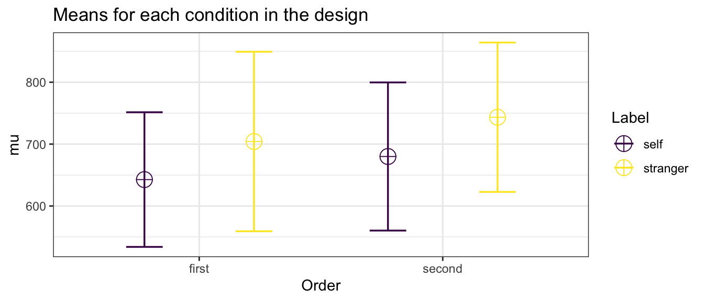
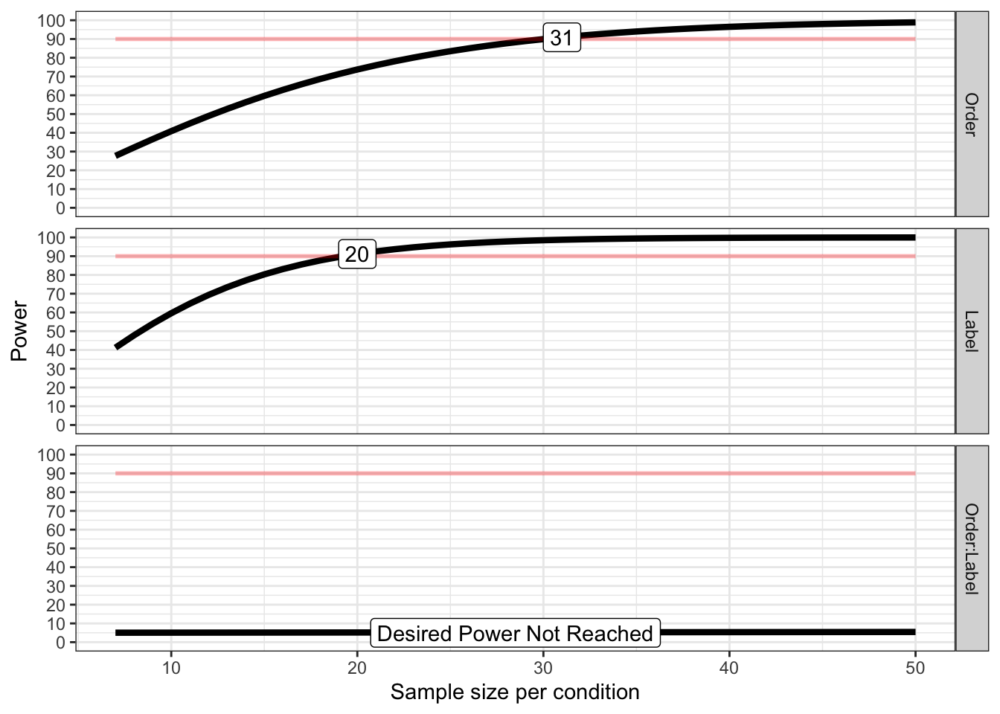
## Achieved Power and Sample Size for ANOVA-level effects
## variable label n achieved_power desired_power
## 1 Order Desired Power Achieved 31 90.91 90
## 2 Label Desired Power Achieved 20 91.18 90
## 3 Order:Label Desired Power Not Reached 50 5.44 90The simulation results indicated that a minimum of 20 participants would be sufficient to detect the expected effect. To account for potential differences between our nonspatial WM task and Yin et al’s original task, we recruited 50% more participants, resulting in a total sample size of 30.
Subjects completed an associative learning task followed by a working memory task.
The eight abstract shapes used in the tasks. These shapes were evenly sampled from the Validated Circular Shape (VCS) space (Li et al., 2020), designed to approximate the subjective similarity structure of the octagonal layout employed by Yin et al. (2019).
The figure shows two successive example trials in the associative learning task. Each trial presented a red or blue shape with a superimposed social label—“당신” (the Korean word for “you”) or “타인” (the Korean word for “stranger”). Subjects were asked to judge whether the shape color matched the color associated with the referent of the label (self or other) prior to the experiment. The shape’s form was irrelevant to the task and was included solely to familiarize subjects with the shapes used in the later working memory task. Subjects responded using their right hand by pressing a button corresponding to either “match” or “nonmatch.” We refer to this as the label-matching judgment.
Each trial of the working memory task presented a red shape, a blue shape, and a checkerboard pattern in sequence. In half of the trials, the red shape appeared first, and the blue shape appeared first in the other half. Subjects were required to briefly retain the samples’ colors and shapes in working memory. After a 1-second delay, a gray probe shape appeared on the screen, and subjects were asked to make a speeded and accurate judgment as to whether the probe matched either of the two previously presented samples. In 25% of the trials, the probe matched the first sample; in another 25%, it matched the second sample; and in the remaining 50%, it was a novel shape randomly drawn from the other six items in the shape set. Subjects responded using their left hand by pressing a button labeled “old” or “new.” We refer to this as the shape-matching response. On trials where the probe matched one of the two samples, a social label was superimposed on the probe immediately after the shape-matching response. Subjects were then asked to judge whether the color associated with the probed sample matched the color previously associated with the referent of the label (self or other). They responded using their right hand by pressing a button labeled “match” or “nonmatch.” We refer to this as another label-matching response.
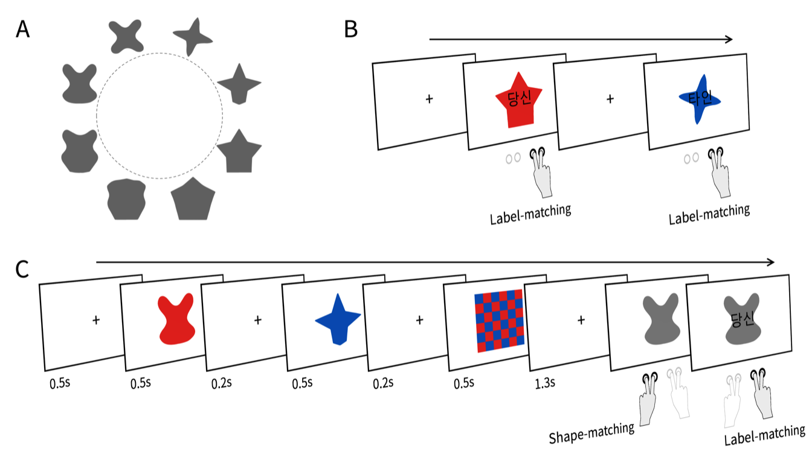
We examined whether any of our subjects (N = 30) exhibited extreme performance that would warrant exclusion as outliers. Subjects made responses for label-color matching in the associative learning task, and for both shape-matching and label-color matching in the working memory task. For all three response types, we calculated each subject’s accuracy and mean response time (RT). Outlier subjects were identified using the boxplot method: a subject was classified as an outlier if their score on any of the six indices (three response types × accuracy and mean RT) exceeded Q3 + 3 × IQR or fell below Q1 – 3 × IQR.
Additionally, mean RTs were computed based only on correct responses, excluding values that deviated more than 2.5 standard deviations from the subject-specific mean.
In the raincloud plots below, each gray dot represents an individual subject’s performance across all trials. The red dashed line indicates the outlier cutoff at Q1 – 3 × IQR or Q3 + 3 × IQR, and the black dotted line marks Q1 – 1.5 × IQR or Q3 + 1.5 × IQR.
# Data loading
s <- read.csv("data/datSPE8VCS1LRN.csv", header = T) %>%
mutate(SN = factor(SN),
Matching = factor(Matching,
labels = c("Match", "Nonmatch"),
levels = c("Match", "Nonmatch")),
Label = factor(Label,
labels = c("Self", "Stranger"),
levels = c("Self", "Stranger")))
str(s)
## 'data.frame': 4320 obs. of 6 variables:
## $ SN : Factor w/ 30 levels "1","2","3","4",..: 1 1 1 1 1 1 1 1 1 1 ...
## $ Matching: Factor w/ 2 levels "Match","Nonmatch": 1 2 1 1 2 2 1 1 1 2 ...
## $ Label : Factor w/ 2 levels "Self","Stranger": 1 1 1 1 1 2 2 1 2 2 ...
## $ Response: chr "Match" "Nonmatch" "Match" "Nonmatch" ...
## $ Correct : int 1 1 1 0 1 1 0 1 0 1 ...
## $ RT : num 4161 1185 1289 871 2027 ...
headTail(s)
## SN Matching Label Response Correct RT
## 1 1 Match Self Match 1 4161.4
## 2 1 Nonmatch Self Nonmatch 1 1185.3
## 3 1 Match Self Match 1 1288.9
## 4 1 Match Self Nonmatch 0 870.6
## ... <NA> <NA> <NA> <NA> ... ...
## 4317 30 Nonmatch Stranger Nonmatch 1 1323.8
## 4318 30 Nonmatch Self Nonmatch 1 993.9
## 4319 30 Nonmatch Stranger Nonmatch 1 1732.4
## 4320 30 Nonmatch Self Match 0 828.4
# Accuracy summary
s.gc <- s %>%
group_by(SN) %>%
summarise(M = mean(Correct)) %>%
ungroup()
s.gc %>% identify_outliers(M)
## # A tibble: 2 × 4
## SN M is.outlier is.extreme
## <fct> <dbl> <lgl> <lgl>
## 1 1 0.736 TRUE TRUE
## 2 6 0.812 TRUE FALSE
thresholds <- s.gc %>%
summarise(Outlier = quantile(M, prob = .25) - 1.5 * IQR(M),
Extreme = quantile(M, prob = .25) - 3 * IQR(M))
Fo1 <- s.gc %>%
single_raincloud_plot(.$M, 0.5, 1, 0.1, "Label-Color Matching Accuracy") +
geom_hline(yintercept=thresholds$Outlier, linetype="dotted") +
geom_hline(yintercept=thresholds$Extreme, linetype='dashed', color='red', linewidth=0.5)
# RT (subject-wise trimming)
range(s$RT[s$Correct==1])
## [1] 327.1 4712.6
st <- s %>%
filter(Correct == 1) %>%
group_by(SN) %>%
nest() %>%
mutate(lbound = map(data, ~mean(.$RT)-tOff*sd(.$RT)),
ubound = map(data, ~mean(.$RT)+tOff*sd(.$RT))) %>%
unnest(c(lbound, ubound)) %>%
unnest(data) %>%
mutate(Outlier = (RT < lbound)|(RT > ubound)) %>%
filter(Outlier == FALSE) %>%
ungroup() %>%
select(SN, Matching, Label, RT)
range(st$RT)
## [1] 327.1 2955.4
# RT summary
s.gt <- st %>%
group_by(SN) %>%
summarise(M = mean(RT)) %>%
ungroup()
s.gt %>% identify_outliers(M)
## # A tibble: 1 × 4
## SN M is.outlier is.extreme
## <fct> <dbl> <lgl> <lgl>
## 1 10 1175. TRUE FALSE
# plot
thresholds <- s.gt %>%
summarise(Outlier = quantile(M, prob = .75) + 1.5 * IQR(M),
Extreme = quantile(M, prob = .75) + 3 * IQR(M))
Fo2 <- s.gt %>%
single_raincloud_plot(.$M, 200, 1400, 200, "Label-Color Matching RT (ms)") +
geom_hline(yintercept=thresholds$Outlier, linetype="dotted") +
geom_hline(yintercept=thresholds$Extreme, linetype='dashed', color='red', linewidth=0.5)
(Fo1 | Fo2) 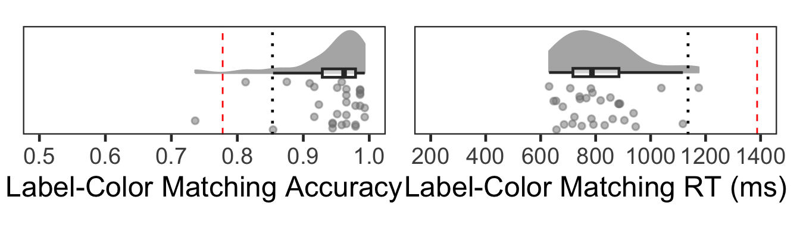
One subject (#1) showed outlier-level low accuracy. No subjects were excluded based on mean RT.
Responses are correct if participants pressed the ‘Same’ key when the probe matched either memory shape, or the ‘Different’ key otherwise.
# Data loading
d <- read.csv("data/datSPE8VCS1TST.csv", header = T) %>%
mutate(SN = factor(SN),
Identity = factor(Identity,
labels = c("Self", "Stranger"),
levels = c("Self", "Stranger")),
Order = factor(Order),
Change = factor(Change),
Matching = factor(Matching),
Label = factor(Label,
labels = c("Self", "Stranger"),
levels = c("Self", "Stranger")))
str(d)
## 'data.frame': 8639 obs. of 10 variables:
## $ SN : Factor w/ 30 levels "1","2","3","4",..: 1 1 1 1 1 1 1 1 1 1 ...
## $ Screen : chr "probe" "label" "probe" "label" ...
## $ Identity: Factor w/ 2 levels "Self","Stranger": 1 1 2 2 2 2 1 1 2 2 ...
## $ Order : Factor w/ 3 levels "","First","Second": 3 3 2 2 3 3 2 2 3 3 ...
## $ Change : Factor w/ 2 levels "Different","Same": 2 2 2 2 2 2 2 2 2 2 ...
## $ Matching: Factor w/ 3 levels "","Match","Nonmatch": 3 3 2 2 2 2 2 2 2 2 ...
## $ Label : Factor w/ 2 levels "Self","Stranger": 2 2 2 2 2 2 1 1 2 2 ...
## $ Response: chr "Same" "Nonmatch" "Same" "Match" ...
## $ Correct : int 1 1 1 1 1 1 1 1 1 1 ...
## $ RT : num 865 789 1071 781 1054 ...
headTail(d)
## SN Screen Identity Order Change Matching Label Response Correct
## 1 1 probe Self Second Same Nonmatch Stranger Same 1
## 2 1 label Self Second Same Nonmatch Stranger Nonmatch 1
## 3 1 probe Stranger First Same Match Stranger Same 1
## 4 1 label Stranger First Same Match Stranger Match 1
## ... <NA> <NA> <NA> <NA> <NA> <NA> <NA> <NA> ...
## 8636 30 label Stranger First Same Nonmatch Self Nonmatch 1
## 8637 30 probe Self First Same Nonmatch Stranger Same 1
## 8638 30 label Self First Same Nonmatch Stranger Nonmatch 1
## 8639 30 probe <NA> Different <NA> Different 1
## RT
## 1 865.2
## 2 789.3
## 3 1071.5
## 4 781
## ... ...
## 8636 927.2
## 8637 765.4
## 8638 730.8
## 8639 595.6
# Shape-matching judgments only
d.dms <- d %>%
filter(Screen == "probe") %>%
droplevels() %>%
dplyr::select(!c(Screen, Identity, Order, Matching))
# Accuracy summary
dgc <- d.dms %>%
group_by(SN) %>%
summarise(M = mean(Correct)) %>%
ungroup()
dgc %>% identify_outliers(M)
## [1] SN M is.outlier is.extreme
## <0 rows> (or 0-length row.names)
thresholds <- dgc %>%
summarise(Outlier = quantile(M, prob = .25) - 1.5 * IQR(M),
Extreme = quantile(M, prob = .25) - 3 * IQR(M))
Fo3 <- dgc %>%
single_raincloud_plot(.$M, 0.5, 1, 0.1, "Shape-Matching Accuracy") +
geom_hline(yintercept=thresholds$Outlier, linetype="dotted") +
geom_hline(yintercept=thresholds$Extreme, linetype='dashed', color='red', linewidth=0.5)
# RT (subject-wise trimming)
range(d.dms$RT[d.dms$Correct==1])
## [1] 364.0 15223.3
dt <- d.dms %>%
filter(Correct == 1) %>%
group_by(SN) %>%
nest() %>%
mutate(lbound = map(data, ~mean(.$RT)-tOff*sd(.$RT)),
ubound = map(data, ~mean(.$RT)+tOff*sd(.$RT))) %>%
unnest(c(lbound, ubound)) %>%
unnest(data) %>%
mutate(Outlier = (RT < lbound)|(RT > ubound)) %>%
filter(Outlier == FALSE) %>%
ungroup %>%
select(SN, Change, RT)
range(dt$RT)
## [1] 364.0 2520.6
# RT summary
dgt <- dt %>%
group_by(SN) %>%
summarise(M = mean(RT)) %>%
ungroup()
dgt %>% identify_outliers(M)
## [1] SN M is.outlier is.extreme
## <0 rows> (or 0-length row.names)
thresholds <- dgt %>%
summarise(Outlier = quantile(M, prob = .75) + 1.5 * IQR(M),
Extreme = quantile(M, prob = .75) + 3 * IQR(M))
Fo4 <- dgt %>%
single_raincloud_plot(.$M, 200, 1400, 200, "Shape-Matching RT (ms)") +
geom_hline(yintercept=thresholds$Outlier, linetype="dotted") +
geom_hline(yintercept=thresholds$Extreme, linetype='dashed', color='red', linewidth=0.5)
(Fo3 | Fo4) 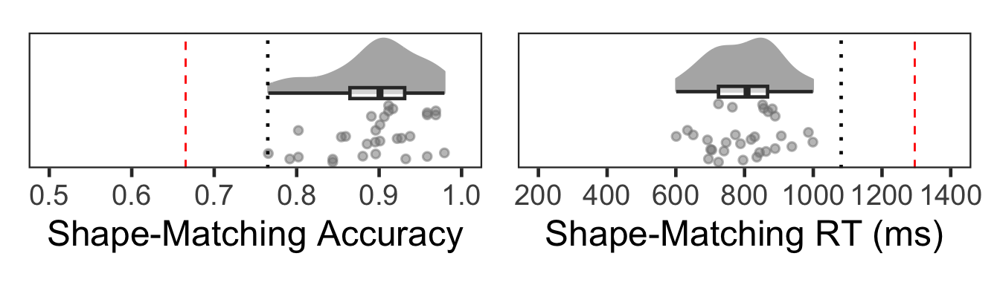
No subjects were identified as outliers based both on accuracy and on mean RTs.
# Label-color matching judgments only
d.spe <- d %>%
filter(Screen == "label") %>% # label은 모두 Same
droplevels() %>%
select(!c(Screen, Identity, Order, Change))
# Accuracy summary
dgs <- d.spe %>%
group_by(SN) %>%
summarise(M = mean(Correct)) %>%
ungroup()
dgs %>% identify_outliers(M)
## # A tibble: 2 × 4
## SN M is.outlier is.extreme
## <fct> <dbl> <lgl> <lgl>
## 1 6 0.656 TRUE FALSE
## 2 10 0.688 TRUE FALSE
thresholds <- dgs %>%
summarise(Outlier = quantile(M, prob = .25) - 1.5 * IQR(M),
Extreme = quantile(M, prob = .25) - 3 * IQR(M))
Fo5 <- dgs %>%
single_raincloud_plot(.$M, 0.5, 1, 0.1, "WM Label-Matching Accuracy") +
geom_hline(yintercept=thresholds$Outlier, linetype="dotted") +
geom_hline(yintercept=thresholds$Extreme, linetype='dashed', color='red', linewidth=0.5)
# RT (subject-wise trimming)
range(d.spe$RT[d.spe$Correct==1])
## [1] 264.2 8908.2
d.spe.rt <- d.spe %>%
filter(Correct == 1) %>%
group_by(SN) %>%
nest() %>%
mutate(lbound = map(data, ~mean(.$RT)-tOff*sd(.$RT)),
ubound = map(data, ~mean(.$RT)+tOff*sd(.$RT))) %>%
unnest(c(lbound, ubound)) %>%
unnest(data) %>%
mutate(Outlier = (RT < lbound)|(RT > ubound)) %>%
filter(Outlier == FALSE) %>%
ungroup %>%
select(SN, Matching, Label, RT)
range(d.spe.rt$RT)
## [1] 264.2 3787.5
# RT summary
dptg <- d.spe.rt %>%
group_by(SN) %>%
summarise(M = mean(RT)) %>%
ungroup()
dptg %>% identify_outliers(M)
## # A tibble: 3 × 4
## SN M is.outlier is.extreme
## <fct> <dbl> <lgl> <lgl>
## 1 10 1016. TRUE FALSE
## 2 28 989. TRUE FALSE
## 3 30 1320. TRUE TRUE
thresholds <- dptg %>%
summarise(OutlierL = quantile(M, prob = .25) - 1.5 * IQR(M),
OutlierU = quantile(M, prob = .75) + 1.5 * IQR(M),
Extreme = quantile(M, prob = .75) + 3 * IQR(M))
Fo6 <- dptg %>%
single_raincloud_plot(.$M, 200, 1400, 200, "WM Label-Matching RT (ms)") +
geom_hline(yintercept=thresholds$OutlierL, linetype="dotted") +
geom_hline(yintercept=thresholds$OutlierU, linetype="dotted") +
geom_hline(yintercept=thresholds$Extreme, linetype='dashed', color='red', linewidth=0.5)
(Fo5 | Fo6)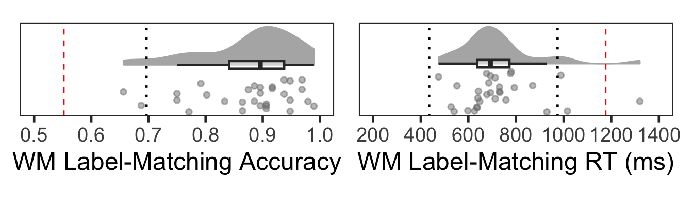
One subject (#30) was classified as an outlier due to slow mean RT.
excluded <- c(1, 30)
s <- rm_subject(s, excluded)
## 2 removed & 28 left
length(unique(s$SN))
## [1] 28
d <- rm_subject(d, excluded)
## 2 removed & 28 left
length(unique(d$SN))
## [1] 28In summary, one subject with low label-color matching accuracy in the associative learning task and another with markedly slow label-color matching RT in the working memory task were classified as outliers and excluded from further analyses.
아래 왼편 플롯의 Self vs. Stranger는 Label을 가리킨다. Nonmatch 조건의 시행에서는 Label와 Color가 지칭하는 사람이 다르므로 Label을 기준으로 시행을 구분하였다. Wade & Vickery (2017)는 label의 처리속도를 통제하기 위해 각 label의 match와 nonmatch 응답을 비교하여 congruency benefit을 계산하였다. 오른쪽 플롯이 바로 그 값이다.
우리는 오른쪽 플롯에 제시된 Self 조건과 Stranger 조건의 차이를 계산하여 자기편향(self-bias)으로 정의할 것이다.
length(unique(s$SN))
## [1] 28
table(s$Label, s$SN)
##
## 2 3 4 5 6 7 8 9 10 11 12 13 14 15 16 17 18 19 20 21 22 23 24
## Self 72 72 72 72 72 72 72 72 72 72 72 72 72 72 72 72 72 72 72 72 72 72 72
## Stranger 72 72 72 72 72 72 72 72 72 72 72 72 72 72 72 72 72 72 72 72 72 72 72
##
## 25 26 27 28 29
## Self 72 72 72 72 72
## Stranger 72 72 72 72 72
table(s$Matching, s$SN)
##
## 2 3 4 5 6 7 8 9 10 11 12 13 14 15 16 17 18 19 20 21 22 23 24
## Match 72 72 72 72 72 72 72 72 72 72 72 72 72 72 72 72 72 72 72 72 72 72 72
## Nonmatch 72 72 72 72 72 72 72 72 72 72 72 72 72 72 72 72 72 72 72 72 72 72 72
##
## 25 26 27 28 29
## Match 72 72 72 72 72
## Nonmatch 72 72 72 72 72
table(s$Response, s$SN)
##
## 2 3 4 5 6 7 8 9 10 11 12 13 14 15 16 17 18 19 20 21 22 23 24
## Match 76 78 71 73 77 74 72 69 73 73 66 72 72 74 72 71 71 69 73 76 68 71 69
## Nonmatch 68 66 73 71 67 70 72 75 71 71 78 72 72 70 72 73 73 75 71 68 76 73 75
##
## 25 26 27 28 29
## Match 73 74 70 69 73
## Nonmatch 71 70 74 75 71
table(s$Correct, s$SN)
##
## 2 3 4 5 6 7 8 9 10 11 12 13 14 15 16 17 18 19 20
## 0 8 12 3 1 27 12 8 3 5 5 8 2 2 2 18 3 7 11 7
## 1 136 132 141 143 117 132 136 141 139 139 136 142 142 142 126 141 137 133 137
##
## 21 22 23 24 25 26 27 28 29
## 0 6 6 1 5 13 2 2 5 5
## 1 138 138 143 139 131 142 142 139 139
s.acc <- s %>%
group_by(SN, Matching, Label) %>%
summarise(Accuracy = mean(Correct)) %>%
ungroup()
plotMatchLabel(s.acc, "Accuracy", 0.5, 1, .1, FALSE, -.2, .2, .1, .1)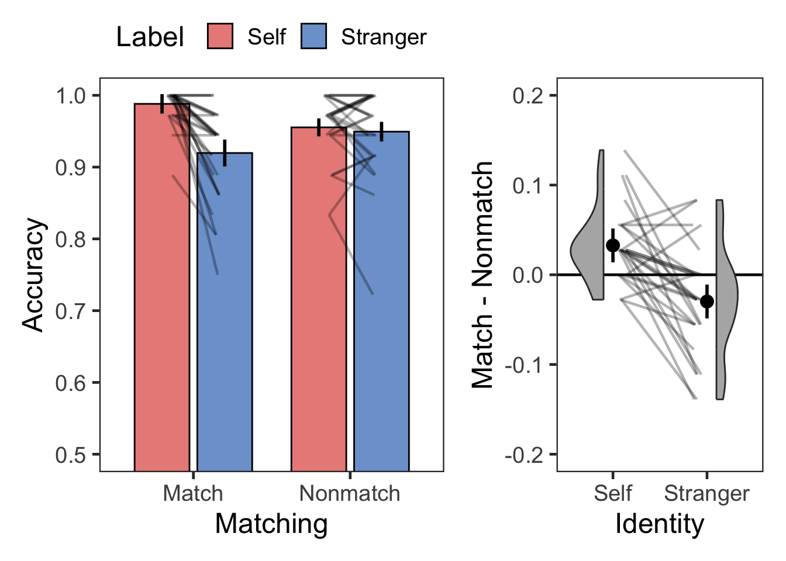
# Descriptive
s.acc %>% group_by(Matching, Label) %>%
get_summary_stats(Accuracy, show = c("mean", "sd")) %>%
kable(digits = 2, format = "simple", caption = "Descriptive summary")| Matching | Label | variable | n | mean | sd |
|---|---|---|---|---|---|
| Match | Self | Accuracy | 28 | 0.99 | 0.02 |
| Match | Stranger | Accuracy | 28 | 0.92 | 0.06 |
| Nonmatch | Self | Accuracy | 28 | 0.96 | 0.05 |
| Nonmatch | Stranger | Accuracy | 28 | 0.95 | 0.06 |
# BF
( bf.sAcc <- anovaBF(Accuracy ~ Matching*Label + SN, data = as.data.frame(s.acc),
whichRandom = "SN", iterations = nIter, progress = FALSE) )
## Bayes factor analysis
## --------------
## [1] Matching + SN : 0.2020331 ±0.35%
## [2] Label + SN : 1835.635 ±0.7%
## [3] Matching + Label + SN : 376.8199 ±2.13%
## [4] Matching + Label + Matching:Label + SN : 173567.8 ±0.63%
##
## Against denominator:
## Accuracy ~ SN
## ---
## Bayes factor type: BFlinearModel, JZS
# plot(bf.sAcc)
# ANOVA
cbind(
anova_test(
data = s.acc, dv = Accuracy, wid = SN,
within = c(Matching, Label),
effect.size = "pes") %>%
get_anova_table(),
tibble(BF10 = c( exp((bf.sAcc[3]/bf.sAcc[2])@bayesFactor$bf), # Matching
exp((bf.sAcc[3]/bf.sAcc[1])@bayesFactor$bf), # Label
exp((bf.sAcc[4]/bf.sAcc[3])@bayesFactor$bf) ), # Matching x Label
BF01 = c( exp((bf.sAcc[2]/bf.sAcc[3])@bayesFactor$bf),
exp((bf.sAcc[1]/bf.sAcc[3])@bayesFactor$bf),
exp((bf.sAcc[3]/bf.sAcc[4])@bayesFactor$bf) ))) %>%
kable(digits = c(0,0,0,3,5,0,3,3,3), format = "simple", caption = "ANOVA")| Effect | DFn | DFd | F | p | p<.05 | pes | BF10 | BF01 |
|---|---|---|---|---|---|---|---|---|
| Matching | 1 | 27 | 0.042 | 0.83900 | 0.002 | 0.205 | 4.871 | |
| Label | 1 | 27 | 22.404 | 0.00006 | * | 0.453 | 1865.139 | 0.001 |
| Matching:Label | 1 | 27 | 23.160 | 0.00005 | * | 0.462 | 460.612 | 0.002 |
# Post-hoc
dgT <- 3
dgP <- 5
dgM <- 3
dgC <- 3
dgD <- 3
cbind(s.acc %>%
group_by(Label) %>%
t_test(Accuracy ~ Matching, ref.group = "Match",
paired = TRUE, detailed = TRUE) %>%
adjust_pvalue(method = "bonferroni") %>%
add_significance("p.adj") %>%
unite("Comparison", group1:group2, sep = " > ") %>%
mutate("95% CI" = paste0("[", round(conf.low, digits = dgC), ", ",
round(conf.high, digits = dgC), "]")) %>%
rename('T' = statistic, M = estimate) %>%
select(Label, Comparison, 'T', df, p, p.adj, p.adj.signif,
M, '95% CI'),
s.acc %>%
group_by(Label) %>%
cohens_d(Accuracy ~ Matching, paired = TRUE, ref.group = "Match") %>%
select("effsize", "magnitude") %>%
rename("Cohen's d" = effsize)) %>%
kable(digits = c(0,0,dgT,0,dgP,dgP,0,dgM,0,dgD,0),
format = "simple", caption = "T-Test, Bonferroni Corrected")| Label | Comparison | T | df | p | p.adj | p.adj.signif | M | 95% CI | Cohen’s d | magnitude |
|---|---|---|---|---|---|---|---|---|---|---|
| Self | Match > Nonmatch | 4.251 | 27 | 0.00023 | 0.00045 | *** | 0.033 | [0.017, 0.049] | 0.803 | large |
| Stranger | Match > Nonmatch | -2.605 | 27 | 0.01480 | 0.02960 | * | -0.030 | [-0.053, -0.006] | -0.492 | small |
Accuracy에서 설명한 바와 같다. 우리는 오른쪽 플롯에서 Self 조건과 Stranger 조건의 차이를 계산하여 Self-bias로 정의할 것이다.
range(s$RT[s$Correct==1])
## [1] 327.1 4712.6
st <- s %>%
filter(Correct == 1) %>%
group_by(SN) %>%
nest() %>%
mutate(lbound = map(data, ~mean(.$RT)-tOff*sd(.$RT)),
ubound = map(data, ~mean(.$RT)+tOff*sd(.$RT))) %>%
unnest(c(lbound, ubound)) %>%
unnest(data) %>%
mutate(Outlier = (RT < lbound)|(RT > ubound)) %>%
filter(Outlier == FALSE) %>%
ungroup() %>%
select(SN, Matching, Label, RT)
range(st$RT)
## [1] 327.1 2955.4
# check numbers of trials per condition
tmp <- st %>%
group_by(SN, Matching, Label) %>%
summarise(n = n()) %>%
ungroup()
range(tmp$n) # check min & max number of trials.
## [1] 25 36
tmp %>%
unite("Cond", Matching:Label) %>%
pivot_wider(id_cols = SN, names_from = Cond, values_from = n) %>%
print(n = Inf) # relatively high accuracy. seems enough number of trials.
## # A tibble: 28 × 5
## SN Match_Self Match_Stranger Nonmatch_Self Nonmatch_Stranger
## <fct> <int> <int> <int> <int>
## 1 2 36 32 32 31
## 2 3 34 34 29 33
## 3 4 36 33 33 35
## 4 5 36 35 34 34
## 5 6 32 27 30 25
## 6 7 36 30 30 33
## 7 8 35 32 34 32
## 8 9 36 31 35 36
## 9 10 36 33 33 32
## 10 11 36 33 35 32
## 11 12 35 30 35 33
## 12 13 36 33 35 33
## 13 14 36 34 34 36
## 14 15 35 36 32 35
## 15 16 36 27 31 31
## 16 17 35 34 35 32
## 17 18 33 33 34 35
## 18 19 35 29 34 32
## 19 20 35 34 34 32
## 20 21 36 35 33 29
## 21 22 36 31 33 35
## 22 23 36 34 35 34
## 23 24 36 30 35 33
## 24 25 35 31 31 32
## 25 26 36 35 35 33
## 26 27 36 34 35 33
## 27 28 35 33 34 35
## 28 29 35 34 34 33
( pTrim1 <- 100*(sum(s$Correct) - nrow(st))/sum(s$Correct) ) # proportion of the trimmed
## [1] 2.419984
# RT summary
s.rt <- st %>%
group_by(SN, Matching, Label) %>%
summarise(RT = mean(RT)) %>%
ungroup()
plotMatchLabel(s.rt, "Response Time (ms)", 500, 1500, 200, TRUE, -100, 400, 100, 1)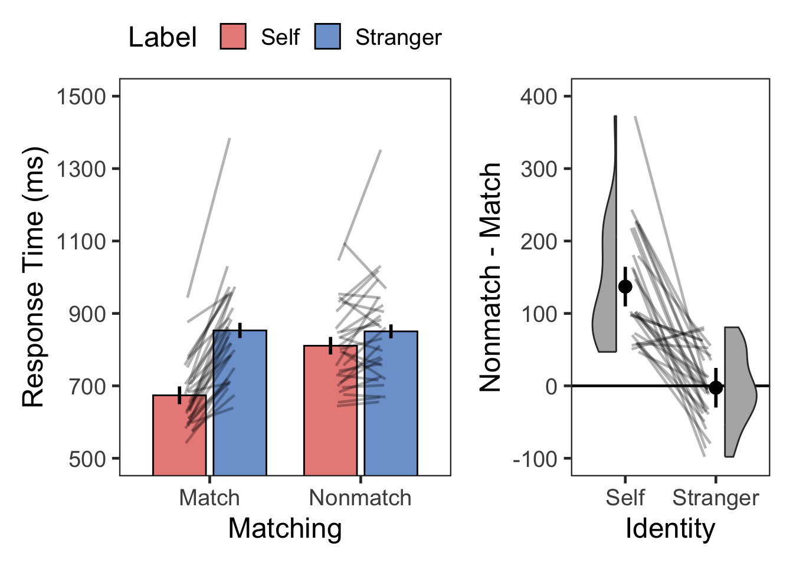
# Descriptive
s.rt %>% group_by(Matching, Label) %>%
get_summary_stats(RT, show = c("mean", "sd")) %>%
kable(digits = 0, format = "simple", caption = "Descriptive summary")| Matching | Label | variable | n | mean | sd |
|---|---|---|---|---|---|
| Match | Self | RT | 28 | 674 | 93 |
| Match | Stranger | RT | 28 | 853 | 149 |
| Nonmatch | Self | RT | 28 | 811 | 116 |
| Nonmatch | Stranger | RT | 28 | 850 | 147 |
# BF
( bf.sRT <- anovaBF(RT ~ Matching*Label + SN, data = as.data.frame(s.rt),
whichRandom = "SN", iterations = nIter, progress = FALSE) )
## Bayes factor analysis
## --------------
## [1] Matching + SN : 77.65403 ±0.41%
## [2] Label + SN : 32084969 ±0.35%
## [3] Matching + Label + SN : 158872277832 ±0.61%
## [4] Matching + Label + Matching:Label + SN : 96469509162155792 ±1.08%
##
## Against denominator:
## RT ~ SN
## ---
## Bayes factor type: BFlinearModel, JZS
# plot(bf.sRT)
# ANOVA
cbind(
anova_test(
data = s.rt, dv = RT, wid = SN,
within = c(Matching, Label),
effect.size = "pes") %>%
get_anova_table() ,
tibble(BF10 = c( exp((bf.sRT[3]/bf.sRT[2])@bayesFactor$bf),
exp((bf.sRT[3]/bf.sRT[1])@bayesFactor$bf),
exp((bf.sRT[4]/bf.sRT[3])@bayesFactor$bf) ),
BF01 = c( exp((bf.sRT[2]/bf.sRT[3])@bayesFactor$bf),
exp((bf.sRT[1]/bf.sRT[3])@bayesFactor$bf),
exp((bf.sRT[3]/bf.sRT[4])@bayesFactor$bf) ))) %>%
kable(digits = c(0,0,0,3,9,0,3,3,3), format = "simple", caption = "ANOVA")| Effect | DFn | DFd | F | p | p<.05 | pes | BF10 | BF01 |
|---|---|---|---|---|---|---|---|---|
| Matching | 1 | 27 | 67.373 | 0.000000008 | * | 0.714 | 4951.611 | 0 |
| Label | 1 | 27 | 59.443 | 0.000000027 | * | 0.688 | 2045898660.836 | 0 |
| Matching:Label | 1 | 27 | 54.859 | 0.000000057 | * | 0.670 | 607214.238 | 0 |
# Post-hoc
dgT <- 3
dgP <- 9
dgM <- 0
dgC <- 0
dgD <- 3
cbind(s.rt %>%
group_by(Label) %>%
t_test(RT ~ Matching, ref.group = "Nonmatch",
paired = TRUE, detailed = TRUE) %>%
adjust_pvalue(method = "bonferroni") %>%
add_significance("p.adj") %>%
unite("Comparison", group1:group2, sep = " > ") %>%
mutate("95% CI" = paste0("[", round(conf.low, digits = dgC), ", ",
round(conf.high, digits = dgC), "]")) %>%
rename('T' = statistic, M = estimate) %>%
select(Label, Comparison, 'T', df, p, p.adj, p.adj.signif,
M, '95% CI'),
s.rt %>%
group_by(Label) %>%
cohens_d(RT ~ Matching, paired = TRUE, ref.group = "Nonmatch") %>%
select("effsize", "magnitude") %>%
rename("Cohen's d" = effsize)) %>%
kable(digits = c(0,0,dgT,0,dgP,dgP,0,dgM,0,dgD,0),
format = "simple", caption = "T-Test, Bonferroni Corrected")| Label | Comparison | T | df | p | p.adj | p.adj.signif | M | 95% CI | Cohen’s d | magnitude |
|---|---|---|---|---|---|---|---|---|---|---|
| Self | Nonmatch > Match | 9.162 | 27 | 0.000000001 | 0.000000002 | **** | 137 | [106, 168] | 1.731 | large |
| Stranger | Nonmatch > Match | -0.279 | 27 | 0.783000000 | 1.000000000 | ns | -3 | [-22, 17] | -0.053 | negligible |
2.42% of RTs were removed as extreme values.
앞에서 설명한 바와 같이 Accuracy와 RT의 congurency benefit (Wade & Vickery, 2017)에서 자기편향을 계산하였다.
tmp <- cbind(
s.acc %>%
unite("temp", c("Matching", "Label")) %>%
pivot_wider(id_cols = SN, names_from = temp, values_from = Accuracy) %>%
mutate(Self = Match_Self - Nonmatch_Self,
Stranger = Match_Stranger - Nonmatch_Stranger) %>%
select(SN, Self, Stranger) %>%
mutate(bias = Self - Stranger) %>%
select(SN, bias) %>%
summarise(Mean = mean(bias), SD = sd(bias)),
s.rt %>%
unite("temp", c("Matching", "Label")) %>%
pivot_wider(id_cols = SN, names_from = temp, values_from = RT) %>%
mutate(Self = Nonmatch_Self - Match_Self,
Stranger = Nonmatch_Stranger - Match_Stranger) %>%
select(SN, Self, Stranger) %>%
mutate(bias = Self - Stranger) %>%
select(SN, bias) %>%
summarise(Mean = mean(bias), SD = sd(bias)))
colnames(tmp) <- c("M_accuracy", "SD_accuracy", "M_rt", "SD_rt")
tmp %>%
kable(digits = c(2,2,0,0),
format = "simple", caption = "Self-bias @ label-color matching judgment")| M_accuracy | SD_accuracy | M_rt | SD_rt |
|---|---|---|---|
| 0.06 | 0.07 | 140 | 100 |
Probe가 두 sample 중 하나와 같은 시행(Same)과 두 sample 중 어느 것과도 같지 않은 시행(Different)으로 나누어 delayed Match-to-Sample judgment를 분석하였다.
dc <- d %>% filter(Screen == "probe") %>%
droplevels() %>%
select(!c(Screen, Matching, Label, Identity, Response, Order))
table(dc$Change, dc$Correct)
##
## 0 1
## Different 286 2401
## Same 279 2409
rbind(
dc %>%
group_by(SN) %>%
summarise(M = mean(Correct)) %>%
ungroup() %>%
summarise(Mean = mean(M), SD = sd(M)) %>%
mutate(Change = factor("Overall")) %>%
select(Change, Mean, SD),
dc %>%
group_by(SN, Change) %>%
summarise(M = mean(Correct)) %>%
ungroup() %>%
group_by(Change) %>%
summarise(Mean = mean(M), SD = sd(M))) %>%
pivot_longer(cols = -Change, names_to = "Statistic", values_to = "Value") %>%
pivot_wider(names_from = Change, values_from = Value) %>%
select(Statistic, Overall, Same, Different) %>%
kable(digits = c(0,3,3,3),
format = "simple", caption = "DMS Judgment Summary")| Statistic | Overall | Same | Different |
|---|---|---|---|
| Mean | 0.895 | 0.896 | 0.894 |
| SD | 0.057 | 0.073 | 0.054 |
The key dependent measure was RT on correct shape-probe-match trials, referring to trials where the probe matched one of the two sample shapes in working memory (Yin et al.).
오른쪽 플롯에서 Y축은 self-bias를 의미한다. First 조건과 Second 조건의 평균을 WM 과제의 self-bias로 정의할 것이다.
d.same <- d %>%
filter(Change == "Same", Screen == "probe") %>%
droplevels() %>%
select(!c(Screen, Change, Matching, Label))
str(d.same)
## 'data.frame': 2688 obs. of 6 variables:
## $ SN : Factor w/ 28 levels "2","3","4","5",..: 1 1 1 1 1 1 1 1 1 1 ...
## $ Identity: Factor w/ 2 levels "Self","Stranger": 2 2 2 2 2 1 2 2 1 1 ...
## $ Order : Factor w/ 2 levels "First","Second": 2 1 2 1 1 2 1 2 2 2 ...
## $ Response: chr "Different" "Same" "Same" "Same" ...
## $ Correct : int 0 1 1 1 1 1 1 1 1 1 ...
## $ RT : num 808 893 857 933 1094 ...
table(d.same$SN)
##
## 2 3 4 5 6 7 8 9 10 11 12 13 14 15 16 17 18 19 20 21 22 23 24 25 26 27
## 96 96 96 96 96 96 96 96 96 96 96 96 96 96 96 96 96 96 96 96 96 96 96 96 96 96
## 28 29
## 96 96
table(d.same$Identity, d.same$SN)
##
## 2 3 4 5 6 7 8 9 10 11 12 13 14 15 16 17 18 19 20 21 22 23 24
## Self 48 48 48 48 48 48 48 48 48 48 48 48 48 48 48 48 48 48 48 48 48 48 48
## Stranger 48 48 48 48 48 48 48 48 48 48 48 48 48 48 48 48 48 48 48 48 48 48 48
##
## 25 26 27 28 29
## Self 48 48 48 48 48
## Stranger 48 48 48 48 48
table(d.same$Order, d.same$SN)
##
## 2 3 4 5 6 7 8 9 10 11 12 13 14 15 16 17 18 19 20 21 22 23 24
## First 48 48 48 48 48 48 48 48 48 48 48 48 48 48 48 48 48 48 48 48 48 48 48
## Second 48 48 48 48 48 48 48 48 48 48 48 48 48 48 48 48 48 48 48 48 48 48 48
##
## 25 26 27 28 29
## First 48 48 48 48 48
## Second 48 48 48 48 48
table(d.same$Response, d.same$SN)
##
## 2 3 4 5 6 7 8 9 10 11 12 13 14 15 16 17 18 19 20 21 22 23
## Different 1 16 1 3 17 14 25 8 22 7 10 1 6 6 4 20 12 13 3 9 11 16
## Same 95 80 95 93 79 82 71 88 74 89 86 95 90 90 92 76 84 83 93 87 85 80
##
## 24 25 26 27 28 29
## Different 10 23 4 5 9 3
## Same 86 73 92 91 87 93
table(d.same$Correct, d.same$SN)
##
## 2 3 4 5 6 7 8 9 10 11 12 13 14 15 16 17 18 19 20 21 22 23 24 25 26
## 0 1 16 1 3 17 14 25 8 22 7 10 1 6 6 4 20 12 13 3 9 11 16 10 23 4
## 1 95 80 95 93 79 82 71 88 74 89 86 95 90 90 92 76 84 83 93 87 85 80 86 73 92
##
## 27 28 29
## 0 5 9 3
## 1 91 87 93
# Shape-probe-match accuracy
dsa <- d.same %>%
group_by(SN, Order, Identity) %>%
summarise(Accuracy = mean(Correct)) %>%
ungroup()
plotOrderIdentity(dsa, "Accuracy", 0.5, 1, .1, FALSE, -.2, .3, .1, .1)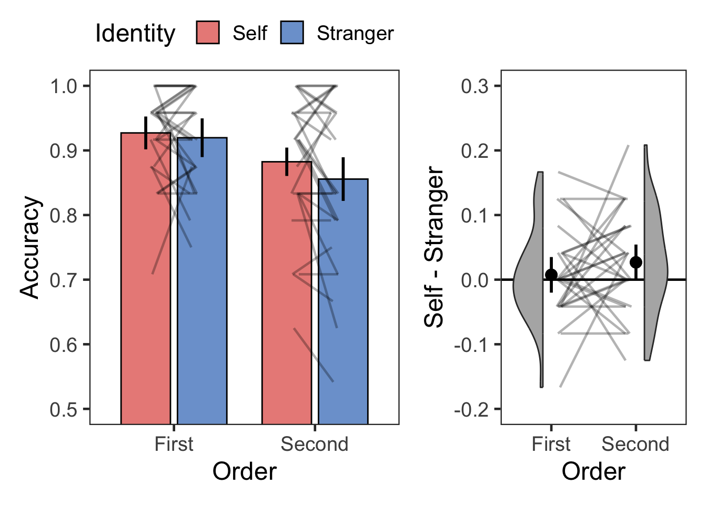
# Descriptive
dsa %>% group_by(Order, Identity) %>%
get_summary_stats(Accuracy, show = c("mean", "sd")) %>%
kable(digits = 2, format = "simple", caption = "Descriptive summary")| Order | Identity | variable | n | mean | sd |
|---|---|---|---|---|---|
| First | Self | Accuracy | 28 | 0.93 | 0.07 |
| First | Stranger | Accuracy | 28 | 0.92 | 0.07 |
| Second | Self | Accuracy | 28 | 0.88 | 0.10 |
| Second | Stranger | Accuracy | 28 | 0.86 | 0.13 |
# BF
( bf.dAcc <- anovaBF(Accuracy ~ Order*Identity + SN, data = as.data.frame(dsa),
whichRandom = "SN", iterations = nIter, progress = FALSE) )
## Bayes factor analysis
## --------------
## [1] Order + SN : 149.9328 ±0.16%
## [2] Identity + SN : 0.3634671 ±0.31%
## [3] Order + Identity + SN : 60.54297 ±0.4%
## [4] Order + Identity + Order:Identity + SN : 19.97899 ±0.82%
##
## Against denominator:
## Accuracy ~ SN
## ---
## Bayes factor type: BFlinearModel, JZS
# ANOVA
cbind(
anova_test(
data = dsa, dv = Accuracy, wid = SN,
within = c(Order, Identity),
effect.size = "pes") %>%
get_anova_table() ,
tibble(BF10 = c( exp((bf.dAcc[3]/bf.dAcc[2])@bayesFactor$bf),
exp((bf.dAcc[3]/bf.dAcc[1])@bayesFactor$bf),
exp((bf.dAcc[4]/bf.dAcc[3])@bayesFactor$bf) ),
BF01 = c( exp((bf.dAcc[2]/bf.dAcc[3])@bayesFactor$bf),
exp((bf.dAcc[1]/bf.dAcc[3])@bayesFactor$bf),
exp((bf.dAcc[3]/bf.dAcc[4])@bayesFactor$bf) ))) %>%
kable(digits = c(0,0,0,3,3,0,3,3,3), format = "simple", caption = "ANOVA")| Effect | DFn | DFd | F | p | p<.05 | pes | BF10 | BF01 |
|---|---|---|---|---|---|---|---|---|
| Order | 1 | 27 | 8.174 | 0.008 | * | 0.232 | 166.571 | 0.006 |
| Identity | 1 | 27 | 2.601 | 0.118 | 0.088 | 0.404 | 2.476 | |
| Order:Identity | 1 | 27 | 1.038 | 0.317 | 0.037 | 0.330 | 3.030 |
# Post-hoc
dgT <- 3
dgP <- 3
dgM <- 3
dgC <- 3
dgD <- 3
cbind(dsa %>%
group_by(Order) %>%
t_test(Accuracy ~ Identity, ref.group = "Self",
paired = TRUE, detailed = TRUE) %>%
adjust_pvalue(method = "bonferroni") %>%
add_significance("p.adj") %>%
unite("Comparison", group1:group2, sep = " > ") %>%
mutate("95% CI" = paste0("[", round(conf.low, digits = dgC), ", ",
round(conf.high, digits = dgC), "]")) %>%
rename('T' = statistic, M = estimate) %>%
select(Order, Comparison, 'T', df, p, p.adj, p.adj.signif,
M, '95% CI'),
dsa %>%
group_by(Order) %>%
cohens_d(Accuracy ~ Identity, paired = TRUE, ref.group = "Self") %>%
select("effsize", "magnitude") %>%
rename("Cohen's d" = effsize)) %>%
kable(digits = c(0,0,dgT,0,dgP,dgP,0,dgM,0,dgD,0),
format = "simple", caption = "T-Test, Bonferroni Corrected")| Order | Comparison | T | df | p | p.adj | p.adj.signif | M | 95% CI | Cohen’s d | magnitude |
|---|---|---|---|---|---|---|---|---|---|---|
| First | Self > Stranger | 0.542 | 27 | 0.592 | 1.00 | ns | 0.007 | [-0.021, 0.036] | 0.102 | negligible |
| Second | Self > Stranger | 1.819 | 27 | 0.080 | 0.16 | ns | 0.027 | [-0.003, 0.057] | 0.344 | small |
range(d.same$RT[d.same$Correct==1])
## [1] 364.0 15223.3
d.same.rt <- d.same %>%
filter(Correct == 1) %>%
group_by(SN) %>%
nest() %>%
mutate(lbound = map(data, ~mean(.$RT)-tOff*sd(.$RT)),
ubound = map(data, ~mean(.$RT)+tOff*sd(.$RT))) %>%
unnest(c(lbound, ubound)) %>%
unnest(data) %>%
mutate(Outlier = (RT < lbound)|(RT > ubound)) %>%
filter(Outlier == FALSE) %>%
ungroup %>%
select(SN, Identity, Order, RT)
range(d.same.rt$RT)
## [1] 364.0 2018.5
# check numbers of trials per condition
tmp <- d.same.rt %>%
group_by(SN, Order, Identity) %>%
summarise(n = n()) %>%
ungroup()
range(tmp$n) # check min & max number of trials
## [1] 11 24
tmp %>%
unite("Cond", Order:Identity) %>%
pivot_wider(id_cols = SN, names_from = Cond, values_from = n) %>%
print(n = Inf) # SN 25 had only 11 trials.
## # A tibble: 28 × 5
## SN First_Self First_Stranger Second_Self Second_Stranger
## <fct> <int> <int> <int> <int>
## 1 2 24 22 24 23
## 2 3 20 21 20 17
## 3 4 24 24 23 22
## 4 5 22 21 24 22
## 5 6 21 17 20 20
## 6 7 23 23 17 18
## 7 8 16 21 17 15
## 8 9 23 24 21 19
## 9 10 17 20 17 16
## 10 11 22 24 21 20
## 11 12 21 24 20 19
## 12 13 24 22 23 24
## 13 14 21 22 22 24
## 14 15 22 22 21 24
## 15 16 23 21 24 22
## 16 17 20 20 19 15
## 17 18 21 20 20 22
## 18 19 22 21 19 19
## 19 20 23 24 23 21
## 20 21 23 22 21 19
## 21 22 24 19 22 18
## 22 23 21 20 20 17
## 23 24 22 16 23 21
## 24 25 23 21 14 11
## 25 26 22 21 23 24
## 26 27 23 24 22 19
## 27 28 20 21 20 23
## 28 29 21 23 23 24
( pTrim3 <- 100*(sum(d.same$Correct) - nrow(d.same.rt))/sum(d.same$Correct)) # proportion of trimmed RTs
## [1] 2.49066
dst <- d.same.rt %>%
group_by(SN, Order, Identity) %>%
summarise(RT = mean(RT)) %>%
ungroup()
plotOrderIdentity(dst, "Response Time (ms)", 500, 1300, 200, TRUE, -150, 200, 50, 1)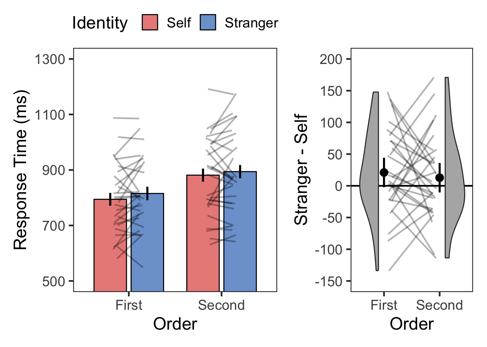
# Descriptive
dst %>% group_by(Order, Identity) %>%
get_summary_stats(RT, show = c("mean", "sd")) %>%
kable(digits = 0, format = "simple", caption = "Descriptive summary")| Order | Identity | variable | n | mean | sd |
|---|---|---|---|---|---|
| First | Self | RT | 28 | 794 | 128 |
| First | Stranger | RT | 28 | 815 | 128 |
| Second | Self | RT | 28 | 881 | 142 |
| Second | Stranger | RT | 28 | 894 | 155 |
# BF
( bf.dRT <- anovaBF(RT ~ Order*Identity + SN, data = as.data.frame(dst),
whichRandom = "SN", iterations = nIter, progress = FALSE) )
## Bayes factor analysis
## --------------
## [1] Order + SN : 23841276 ±0.3%
## [2] Identity + SN : 0.3630282 ±0.4%
## [3] Order + Identity + SN : 12536807 ±2.08%
## [4] Order + Identity + Order:Identity + SN : 3570318 ±2.54%
##
## Against denominator:
## RT ~ SN
## ---
## Bayes factor type: BFlinearModel, JZS
# plot(bf.dAcc)
# ANOVA
cbind(
anova_test(
data = dst, dv = RT, wid = SN,
within = c(Order, Identity),
effect.size = "pes") %>%
get_anova_table() ,
tibble(BF10 = c( exp((bf.dRT[3]/bf.dRT[2])@bayesFactor$bf),
exp((bf.dRT[3]/bf.dRT[1])@bayesFactor$bf),
exp((bf.dRT[4]/bf.dRT[3])@bayesFactor$bf) ),
BF01 = c( exp((bf.dRT[2]/bf.dRT[3])@bayesFactor$bf),
exp((bf.dRT[1]/bf.dRT[3])@bayesFactor$bf),
exp((bf.dRT[3]/bf.dRT[4])@bayesFactor$bf) ))) %>%
kable(digits = c(0,0,0,3,9,0,3,3,3), format = "simple", caption = "ANOVA")| Effect | DFn | DFd | F | p | p<.05 | pes | BF10 | BF01 |
|---|---|---|---|---|---|---|---|---|
| Order | 1 | 27 | 29.375 | 0.00000988 | * | 0.521 | 34533977.251 | 0.000 |
| Identity | 1 | 27 | 2.802 | 0.10600000 | 0.094 | 0.526 | 1.902 | |
| Order:Identity | 1 | 27 | 0.266 | 0.61000000 | 0.010 | 0.285 | 3.511 |
# Post-hoc
dgT <- 3
dgP <- 11
dgM <- 0
dgC <- 0
dgD <- 3
cbind(dst %>%
group_by(Order) %>%
t_test(RT ~ Identity, ref.group = "Stranger",
paired = TRUE, detailed = TRUE) %>%
adjust_pvalue(method = "bonferroni") %>%
add_significance("p.adj") %>%
unite("Comparison", group1:group2, sep = " > ") %>%
mutate("95% CI" = paste0("[", round(conf.low, digits = dgC), ", ",
round(conf.high, digits = dgC), "]")) %>%
rename('T' = statistic, M = estimate) %>%
select(Order, Comparison, 'T', df, p, p.adj, p.adj.signif,
M, '95% CI'),
dst %>%
group_by(Order) %>%
cohens_d(RT ~ Identity, paired = TRUE, ref.group = "Stranger") %>%
select("effsize", "magnitude") %>%
rename("Cohen's d" = effsize)) %>%
kable(digits = c(0,0,dgT,0,dgP,dgP,0,dgM,0,dgD,0),
format = "simple", caption = "T-Test, Bonferroni Corrected")| Order | Comparison | T | df | p | p.adj | p.adj.signif | M | 95% CI | Cohen’s d | magnitude |
|---|---|---|---|---|---|---|---|---|---|---|
| First | Stranger > Self | 1.637 | 27 | 0.113 | 0.226 | ns | 21 | [-5, 47] | 0.309 | small |
| Second | Stranger > Self | 0.991 | 27 | 0.331 | 0.662 | ns | 13 | [-14, 39] | 0.187 | negligible |
2.49% of RTs were removed as extreme values.
First 조건과 Second 조건의 결과를 평균하여 자기편향으로 정의하였다.
tmp <- cbind(
dsa %>%
group_by(SN, Identity) %>%
summarise(value = mean(Accuracy)) %>%
ungroup() %>%
pivot_wider(id_cols = SN, names_from = Identity, values_from = value) %>%
mutate(bias = Self - Stranger) %>%
select(SN, bias) %>%
summarise(Mean = mean(bias), SD = sd(bias)),
dst %>%
group_by(SN, Identity) %>%
summarise(value = mean(RT)) %>%
ungroup() %>%
pivot_wider(id_cols = SN, names_from = Identity, values_from = value) %>%
mutate(bias = Stranger - Self) %>%
select(SN, bias) %>%
summarise(Mean = mean(bias), SD = sd(bias)))
colnames(tmp) <- c("M_accuracy", "SD_accuracy", "M_rt", "SD_rt")
tmp %>%
kable(digits = c(2,2,0,0),
format = "simple", caption = "Self-bias @ WM shape-matching judgment")| M_accuracy | SD_accuracy | M_rt | SD_rt |
|---|---|---|---|
| 0.02 | 0.06 | 17 | 53 |
Associative learning task를 분석한 방법을 그대로 적용하였다.
d.spe <- d %>%
filter(Screen == "label") %>% # label은 모두 Same
droplevels() %>%
select(!c(Screen, Identity, Order, Change))
str(d.spe)
## 'data.frame': 2688 obs. of 6 variables:
## $ SN : Factor w/ 28 levels "2","3","4","5",..: 1 1 1 1 1 1 1 1 1 1 ...
## $ Matching: Factor w/ 2 levels "Match","Nonmatch": 1 1 2 2 1 2 1 2 2 1 ...
## $ Label : Factor w/ 2 levels "Self","Stranger": 2 2 1 1 2 2 2 1 2 1 ...
## $ Response: chr "Match" "Match" "Nonmatch" "Nonmatch" ...
## $ Correct : int 1 1 1 1 1 1 1 1 0 1 ...
## $ RT : num 1790 569 689 810 1025 ...
table(d.spe$Matching, d.spe$SN)
##
## 2 3 4 5 6 7 8 9 10 11 12 13 14 15 16 17 18 19 20 21 22 23 24
## Match 48 48 48 48 48 48 48 48 48 48 48 48 48 48 48 48 48 48 48 48 48 48 48
## Nonmatch 48 48 48 48 48 48 48 48 48 48 48 48 48 48 48 48 48 48 48 48 48 48 48
##
## 25 26 27 28 29
## Match 48 48 48 48 48
## Nonmatch 48 48 48 48 48
table(d.spe$Label, d.spe$SN)
##
## 2 3 4 5 6 7 8 9 10 11 12 13 14 15 16 17 18 19 20 21 22 23 24
## Self 48 48 48 48 48 48 48 48 48 48 48 48 48 48 48 48 48 48 48 48 48 48 48
## Stranger 48 48 48 48 48 48 48 48 48 48 48 48 48 48 48 48 48 48 48 48 48 48 48
##
## 25 26 27 28 29
## Self 48 48 48 48 48
## Stranger 48 48 48 48 48
table(d.spe$Response, d.spe$SN)
##
## 2 3 4 5 6 7 8 9 10 11 12 13 14 15 16 17 18 19 20 21 22 23 24
## Match 48 53 49 49 61 50 58 40 52 43 46 43 48 47 42 51 51 50 42 47 51 47 48
## Nonmatch 48 43 47 47 35 46 38 56 44 53 50 53 48 49 54 45 45 46 54 49 45 49 48
##
## 25 26 27 28 29
## Match 58 48 46 45 51
## Nonmatch 38 48 50 51 45
table(d.spe$Correct, d.spe$SN)
##
## 2 3 4 5 6 7 8 9 10 11 12 13 14 15 16 17 18 19 20 21 22 23 24 25 26
## 0 2 9 3 1 33 10 24 8 30 5 20 5 6 13 12 11 9 22 16 3 5 19 6 24 8
## 1 94 87 93 95 63 86 72 88 66 91 76 91 90 83 84 85 87 74 80 93 91 77 90 72 88
##
## 27 28 29
## 0 10 13 9
## 1 86 83 87
# Accuracy
dgs <- d.spe %>%
group_by(SN, Matching, Label) %>%
summarise(Accuracy = mean(Correct)) %>%
ungroup()
plotMatchLabel(dgs, "Accuracy", 0.5, 1, .1, FALSE, -0.3, 0.4, .1, .1)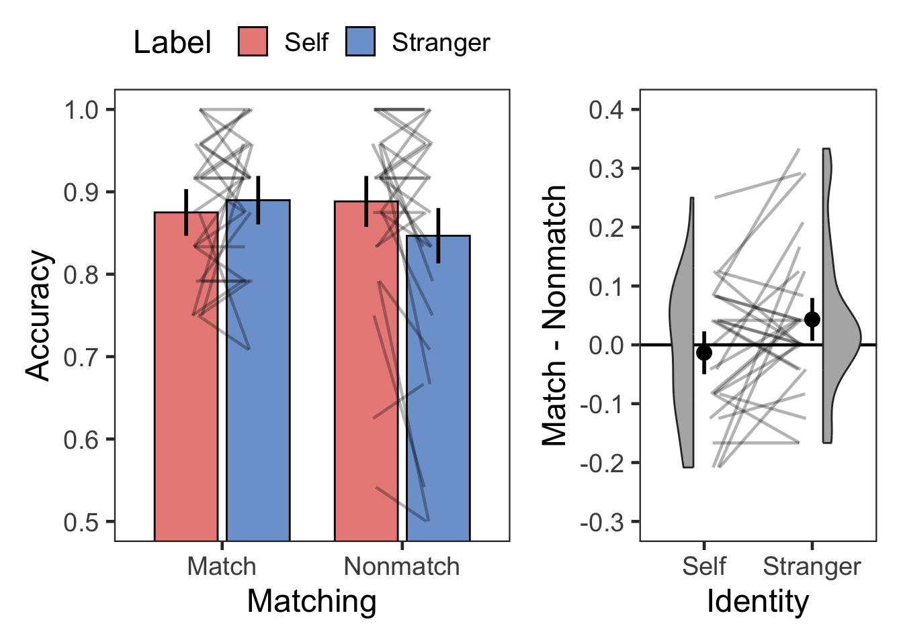
# Descriptive
dgs %>% group_by(Matching, Label) %>%
get_summary_stats(Accuracy, show = c("mean", "sd")) %>%
kable(digits = 2, format = "simple", caption = "Descriptive summary")| Matching | Label | variable | n | mean | sd |
|---|---|---|---|---|---|
| Match | Self | Accuracy | 28 | 0.88 | 0.09 |
| Match | Stranger | Accuracy | 28 | 0.89 | 0.09 |
| Nonmatch | Self | Accuracy | 28 | 0.89 | 0.11 |
| Nonmatch | Stranger | Accuracy | 28 | 0.85 | 0.15 |
# BF
( bf.dSpeAcc <- anovaBF(Accuracy ~ Matching*Label + SN, data = as.data.frame(dgs),
whichRandom = "SN", iterations = nIter, progress = FALSE) )
## Bayes factor analysis
## --------------
## [1] Matching + SN : 0.3058686 ±0.21%
## [2] Label + SN : 0.3048416 ±3.72%
## [3] Matching + Label + SN : 0.08694748 ±0.54%
## [4] Matching + Label + Matching:Label + SN : 0.1124716 ±2.9%
##
## Against denominator:
## Accuracy ~ SN
## ---
## Bayes factor type: BFlinearModel, JZS
# plot(bf.dSpeAcc)
# ANOVA
cbind(
anova_test(
data = dgs, dv = Accuracy, wid = SN,
within = c(Matching, Label),
effect.size = "pes") %>%
get_anova_table() ,
tibble(BF10 = c( exp((bf.dSpeAcc[3]/bf.dSpeAcc[2])@bayesFactor$bf),
exp((bf.dSpeAcc[3]/bf.dSpeAcc[1])@bayesFactor$bf),
exp((bf.dSpeAcc[4]/bf.dSpeAcc[3])@bayesFactor$bf) ),
BF01 = c( exp((bf.dSpeAcc[2]/bf.dSpeAcc[3])@bayesFactor$bf),
exp((bf.dSpeAcc[1]/bf.dSpeAcc[3])@bayesFactor$bf),
exp((bf.dSpeAcc[3]/bf.dSpeAcc[4])@bayesFactor$bf) ))) %>%
kable(digits = c(0,0,0,3,6,0,3,3,3), format = "simple", caption = "ANOVA")| Effect | DFn | DFd | F | p | p<.05 | pes | BF10 | BF01 |
|---|---|---|---|---|---|---|---|---|
| Matching | 1 | 27 | 0.596 | 0.447 | 0.022 | 0.285 | 3.506 | |
| Label | 1 | 27 | 1.310 | 0.262 | 0.046 | 0.284 | 3.518 | |
| Matching:Label | 1 | 27 | 5.074 | 0.033 | * | 0.158 | 1.294 | 0.773 |
# Post-hoc
dgT <- 3
dgP <- 3
dgM <- 3
dgC <- 3
dgD <- 3
cbind(dgs %>%
group_by(Label) %>%
t_test(Accuracy ~ Matching, ref.group = "Match",
paired = TRUE, detailed = TRUE) %>%
adjust_pvalue(method = "bonferroni") %>%
add_significance("p.adj") %>%
unite("Comparison", group1:group2, sep = " > ") %>%
mutate("95% CI" = paste0("[", round(conf.low, digits = dgC), ", ",
round(conf.high, digits = dgC), "]")) %>%
rename('T' = statistic, M = estimate) %>%
select(Label, Comparison, 'T', df, p, p.adj, p.adj.signif,
M, '95% CI'),
dgs %>%
group_by(Label) %>%
cohens_d(Accuracy ~ Matching, paired = TRUE, ref.group = "Match") %>%
select("effsize", "magnitude") %>%
rename("Cohen's d" = effsize)) %>%
kable(digits = c(0,0,dgT,0,dgP,dgP,0,dgM,0,dgD,0),
format = "simple", caption = "T-Test, Bonferroni Corrected")| Label | Comparison | T | df | p | p.adj | p.adj.signif | M | 95% CI | Cohen’s d | magnitude |
|---|---|---|---|---|---|---|---|---|---|---|
| Self | Match > Nonmatch | -0.607 | 27 | 0.549 | 1.000 | ns | -0.013 | [-0.059, 0.032] | -0.115 | negligible |
| Stranger | Match > Nonmatch | 1.805 | 27 | 0.082 | 0.165 | ns | 0.043 | [-0.006, 0.092] | 0.341 | small |
range(d.spe$RT[d.spe$Correct==1])
## [1] 264.2 4904.4
d.spe.rt <- d.spe %>%
filter(Correct == 1) %>%
group_by(SN) %>%
nest() %>%
mutate(lbound = map(data, ~mean(.$RT)-tOff*sd(.$RT)),
ubound = map(data, ~mean(.$RT)+tOff*sd(.$RT))) %>%
unnest(c(lbound, ubound)) %>%
unnest(data) %>%
mutate(Outlier = (RT < lbound)|(RT > ubound)) %>%
filter(Outlier == FALSE) %>%
ungroup %>%
select(SN, Matching, Label, RT)
range(d.spe.rt$RT)
## [1] 264.2 2825.8
# check numbers of trials per condition
tmp <- d.spe.rt %>%
group_by(SN, Matching, Label) %>%
summarise(n = n()) %>%
ungroup()
range(tmp$n)
## [1] 10 24
tmp %>%
unite("Cond", Matching:Label) %>%
pivot_wider(id_cols = SN, names_from = Cond, values_from = n) %>%
print(n = Inf)
## # A tibble: 28 × 5
## SN Match_Self Match_Stranger Nonmatch_Self Nonmatch_Stranger
## <fct> <int> <int> <int> <int>
## 1 2 23 22 24 22
## 2 3 23 20 21 20
## 3 4 23 24 20 23
## 4 5 24 23 22 23
## 5 6 19 19 13 10
## 6 7 22 20 21 21
## 7 8 17 23 15 15
## 8 9 19 19 21 23
## 9 10 18 17 18 11
## 10 11 20 22 22 24
## 11 12 18 17 23 15
## 12 13 22 21 23 24
## 13 14 22 20 22 22
## 14 15 18 21 22 18
## 15 16 20 18 22 23
## 16 17 23 21 18 19
## 17 18 22 22 20 22
## 18 19 21 17 19 14
## 19 20 17 19 23 19
## 20 21 22 24 23 21
## 21 22 24 21 22 22
## 22 23 19 18 21 17
## 23 24 23 21 22 22
## 24 25 20 20 18 13
## 25 26 22 22 21 21
## 26 27 20 21 22 21
## 27 28 19 20 21 20
## 28 29 20 23 21 20
(pTrim4 <- 100*(sum(d.spe$Correct) - nrow(d.spe.rt))/sum(d.spe$Correct)) # proportion of trimmed RTs
## [1] 3.061224
# RT summary
dpt <- d.spe.rt %>%
group_by(SN, Matching, Label) %>%
summarise(RT = mean(RT)) %>%
ungroup()
plotMatchLabel(dpt, "Response Time (ms)", 400, 1200, 200, TRUE, -200, 400, 100, 1)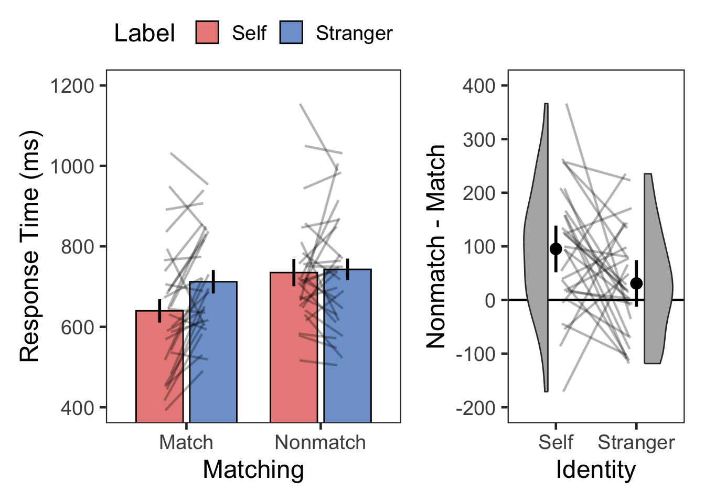
# Descriptive
dpt %>% group_by(Matching, Label) %>%
get_summary_stats(RT, show = c("mean", "sd")) %>%
kable(digits = 0, format = "simple", caption = "Descriptive summary")| Matching | Label | variable | n | mean | sd |
|---|---|---|---|---|---|
| Match | Self | RT | 28 | 640 | 161 |
| Match | Stranger | RT | 28 | 712 | 130 |
| Nonmatch | Self | RT | 28 | 735 | 138 |
| Nonmatch | Stranger | RT | 28 | 743 | 151 |
# BF
( bf.dSpeRT <- anovaBF(RT ~ Matching*Label + SN, data = as.data.frame(dpt),
whichRandom = "SN", iterations = nIter, progress = FALSE) )
## Bayes factor analysis
## --------------
## [1] Matching + SN : 203.983 ±0.29%
## [2] Label + SN : 2.765072 ±0.19%
## [3] Matching + Label + SN : 946.8884 ±0.39%
## [4] Matching + Label + Matching:Label + SN : 1889.554 ±0.95%
##
## Against denominator:
## RT ~ SN
## ---
## Bayes factor type: BFlinearModel, JZS
# plot(bf.dSpeRT)
# ANOVA
cbind(
anova_test(
data = dpt, dv = RT, wid = SN,
within = c(Matching, Label),
effect.size = "pes") %>%
get_anova_table() ,
tibble(BF10 = c( exp((bf.dSpeRT[3]/bf.dSpeRT[2])@bayesFactor$bf),
exp((bf.dSpeRT[3]/bf.dSpeRT[1])@bayesFactor$bf),
exp((bf.dSpeRT[4]/bf.dSpeRT[3])@bayesFactor$bf) ),
BF01 = c( exp((bf.dSpeRT[2]/bf.dSpeRT[3])@bayesFactor$bf),
exp((bf.dSpeRT[1]/bf.dSpeRT[3])@bayesFactor$bf),
exp((bf.dSpeRT[3]/bf.dSpeRT[4])@bayesFactor$bf) ))) %>%
kable(digits = c(0,0,0,3,4,0,3,3,3), format = "simple", caption = "ANOVA")| Effect | DFn | DFd | F | p | p<.05 | pes | BF10 | BF01 |
|---|---|---|---|---|---|---|---|---|
| Matching | 1 | 27 | 18.699 | 0.0002 | * | 0.409 | 342.446 | 0.003 |
| Label | 1 | 27 | 8.181 | 0.0080 | * | 0.233 | 4.642 | 0.215 |
| Matching:Label | 1 | 27 | 4.605 | 0.0410 | * | 0.146 | 1.996 | 0.501 |
# Post-hoc
dgT <- 3
dgP <- 5
dgM <- 0
dgC <- 0
dgD <- 3
cbind(dpt %>%
group_by(Label) %>%
t_test(RT ~ Matching, ref.group = "Nonmatch",
paired = TRUE, detailed = TRUE) %>%
adjust_pvalue(method = "bonferroni") %>%
add_significance("p.adj") %>%
unite("Comparison", group1:group2, sep = " > ") %>%
mutate("95% CI" = paste0("[", round(conf.low, digits = dgC), ", ",
round(conf.high, digits = dgC), "]")) %>%
rename('T' = statistic, M = estimate) %>%
select(Label, Comparison, 'T', df, p, p.adj, p.adj.signif,
M, '95% CI'),
dpt %>%
group_by(Label) %>%
cohens_d(RT ~ Matching, paired = TRUE, ref.group = "Nonmatch") %>%
select("effsize", "magnitude") %>%
rename("Cohen's d" = effsize)) %>%
kable(digits = c(0,0,dgT,0,dgP,dgP,0,dgM,0,dgD,0),
format = "simple", caption = "T-Test, Bonferroni Corrected")| Label | Comparison | T | df | p | p.adj | p.adj.signif | M | 95% CI | Cohen’s d | magnitude |
|---|---|---|---|---|---|---|---|---|---|---|
| Self | Nonmatch > Match | 4.202 | 27 | 0.00026 | 0.00052 | *** | 95 | [49, 142] | 0.794 | moderate |
| Stranger | Nonmatch > Match | 1.623 | 27 | 0.11600 | 0.23200 | ns | 31 | [-8, 70] | 0.307 | small |
3.06% of RTs were removed as extreme values.
tmp <- cbind(
dgs %>%
unite("temp", c("Matching", "Label")) %>%
pivot_wider(id_cols = SN, names_from = temp, values_from = Accuracy) %>%
mutate(Self = Match_Self - Nonmatch_Self,
Stranger = Match_Stranger - Nonmatch_Stranger) %>%
select(SN, Self, Stranger) %>%
mutate(bias = Self - Stranger) %>%
select(SN, bias) %>%
summarise(Mean = mean(bias), SD = sd(bias)),
dpt %>%
unite("temp", c("Matching", "Label")) %>%
pivot_wider(id_cols = SN, names_from = temp, values_from = RT) %>%
mutate(Self = Nonmatch_Self - Match_Self,
Stranger = Nonmatch_Stranger - Match_Stranger) %>%
select(SN, Self, Stranger) %>%
mutate(bias = Self - Stranger) %>%
select(SN, bias) %>%
summarise(Mean = mean(bias), SD = sd(bias)))
colnames(tmp) <- c("M_accuracy", "SD_accuracy", "M_rt", "SD_rt")
tmp %>%
kable(digits = c(2,2,0,0),
format = "simple", caption = "Self-bias @ WM label-color matching judgment")| M_accuracy | SD_accuracy | M_rt | SD_rt |
|---|---|---|---|
| -0.06 | 0.13 | 64 | 159 |
Associative learning task의 label-matching RT, Working memory task의 shape-matching RT와 label-matching RT에서 계산한 self-bias의 상관을 계산하였다.
# Associative Learning Task: Label-Matching
asc.effect <- s.rt %>%
unite("temp", c("Matching", "Label")) %>%
pivot_wider(id_cols = SN, names_from = temp, values_from = RT) %>%
mutate(Self = Nonmatch_Self - Match_Self,
Stranger = Nonmatch_Stranger - Match_Stranger) %>%
select(SN, Self, Stranger) %>%
mutate(lrnLabel = Self - Stranger) %>%
select(SN, lrnLabel)
# Working Memory Task: Shape-Matching
shape.effect <- dst %>%
group_by(SN, Identity) %>%
summarise(value = mean(RT)) %>%
ungroup() %>%
pivot_wider(id_cols = SN, names_from = Identity, values_from = value) %>%
mutate(wmShape = Stranger - Self) %>%
select(SN, wmShape)
# Working Memory Task: Label-Matching
tst.effect <- dpt %>%
unite("temp", c("Matching", "Label")) %>%
pivot_wider(id_cols = SN, names_from = temp, values_from = RT) %>%
mutate(Self = Nonmatch_Self - Match_Self,
Stranger = Nonmatch_Stranger - Match_Stranger) %>%
select(SN, Self, Stranger) %>%
mutate(wmLabel = Self - Stranger) %>%
select(SN, wmLabel)
self.bias <- full_join(
full_join(asc.effect, shape.effect, by = 'SN'),
tst.effect, by = 'SN')
self.bias %>%
select(-SN) %>%
pairs.panels(method = "pearson", lm = TRUE, stars = TRUE)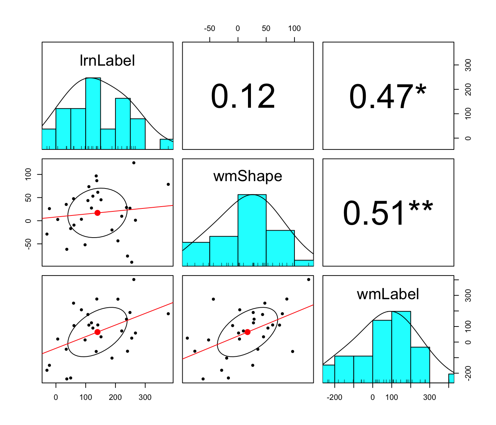
lrnLabel: Label-matching self-bias in the
associative learning task
wmShape: Shape-matching
self-bias in the working memory task
wmLabel:
Label-matching self-bias in the working memory task
cor.mat <- self.bias %>% select(-SN) %>% cor_mat(method = "pearson")
ctb <- cor.mat %>% cor_gather() %>% slice(c(4,7,8)) %>% rename(r = cor)
ctb <- ctb %>%
mutate(p_bonferroni = p * 3, # Bonferroni correction
p_bonferroni = ifelse(p_bonferroni > 1, 1, p_bonferroni)) # max = 1
# BF
( bf.corr1 <- correlationBF(y = self.bias$lrnLabel, x = self.bias$wmShape) )
## Bayes factor analysis
## --------------
## [1] Alt., r=0.333 : 0.4805723 ±0%
##
## Against denominator:
## Null, rho = 0
## ---
## Bayes factor type: BFcorrelation, Jeffreys-beta*
( bf.corr2 <- correlationBF(y = self.bias$lrnLabel, x = self.bias$wmLabel) )
## Bayes factor analysis
## --------------
## [1] Alt., r=0.333 : 5.933375 ±0%
##
## Against denominator:
## Null, rho = 0
## ---
## Bayes factor type: BFcorrelation, Jeffreys-beta*
( bf.corr3 <- correlationBF(y = self.bias$wmShape, x = self.bias$wmLabel) )
## Bayes factor analysis
## --------------
## [1] Alt., r=0.333 : 9.682281 ±0%
##
## Against denominator:
## Null, rho = 0
## ---
## Bayes factor type: BFcorrelation, Jeffreys-beta*
ttb <- tibble(
var1 = c('lrnLabel', 'lrnLabel', 'wmShape'),
var2 = c('wmShape', 'wmLabel', 'wmLabel'),
BF10 = c( exp(bf.corr1@bayesFactor$bf),
exp(bf.corr2@bayesFactor$bf),
exp(bf.corr3@bayesFactor$bf) ),
BF01 = c( exp((1/bf.corr1)@bayesFactor$bf),
exp((1/bf.corr2)@bayesFactor$bf),
exp((1/bf.corr3)@bayesFactor$bf) ))
full_join(ctb, ttb) %>%
kable(digits = 3, format = "simple",
caption = "Pearson Correlation Coefficient & Bayes Factors")
## Joining with `by = join_by(var1, var2)`| var1 | var2 | r | p | p_bonferroni | BF10 | BF01 |
|---|---|---|---|---|---|---|
| lrnLabel | wmShape | 0.12 | 0.546 | 1.000 | 0.481 | 2.081 |
| lrnLabel | wmLabel | 0.47 | 0.012 | 0.035 | 5.933 | 0.169 |
| wmShape | wmLabel | 0.51 | 0.006 | 0.018 | 9.682 | 0.103 |
sessionInfo()
## R version 4.5.1 (2025-06-13)
## Platform: aarch64-apple-darwin20
## Running under: macOS Sequoia 15.6.1
##
## Matrix products: default
## BLAS: /Library/Frameworks/R.framework/Versions/4.5-arm64/Resources/lib/libRblas.0.dylib
## LAPACK: /Library/Frameworks/R.framework/Versions/4.5-arm64/Resources/lib/libRlapack.dylib; LAPACK version 3.12.1
##
## locale:
## [1] en_US.UTF-8/en_US.UTF-8/en_US.UTF-8/C/en_US.UTF-8/en_US.UTF-8
##
## time zone: Asia/Seoul
## tzcode source: internal
##
## attached base packages:
## [1] stats graphics grDevices utils datasets methods base
##
## other attached packages:
## [1] klippy_0.0.0.9500 patchwork_1.3.2 cowplot_1.2.0
## [4] see_0.12.0 ggpubr_0.6.1 Superpower_0.2.4.1
## [7] BayesFactor_0.9.12-4.7 Matrix_1.7-4 coda_0.19-4.1
## [10] rstatix_0.7.2 knitr_1.50 psych_2.5.6
## [13] lubridate_1.9.4 forcats_1.0.0 stringr_1.5.2
## [16] dplyr_1.1.4 purrr_1.1.0 readr_2.1.5
## [19] tidyr_1.3.1 tibble_3.3.0 ggplot2_4.0.0
## [22] tidyverse_2.0.0
##
## loaded via a namespace (and not attached):
## [1] tidyselect_1.2.1 viridisLite_0.4.2 farver_2.1.2
## [4] S7_0.2.0 fastmap_1.2.0 pacman_0.5.1
## [7] digest_0.6.37 estimability_1.5.1 timechange_0.3.0
## [10] lifecycle_1.0.4 magrittr_2.0.4 compiler_4.5.1
## [13] rlang_1.1.6 sass_0.4.10 tools_4.5.1
## [16] utf8_1.2.6 yaml_2.3.10 ggsignif_0.6.4
## [19] labeling_0.4.3 mnormt_2.1.1 plyr_1.8.9
## [22] RColorBrewer_1.1-3 abind_1.4-8 withr_3.0.2
## [25] numDeriv_2016.8-1.1 grid_4.5.1 afex_1.5-0
## [28] xtable_1.8-4 emmeans_1.11.2-8 scales_1.4.0
## [31] MASS_7.3-65 insight_1.4.2 cli_3.6.5
## [34] mvtnorm_1.3-3 crayon_1.5.3 rmarkdown_2.29
## [37] reformulas_0.4.1 generics_0.1.4 rstudioapi_0.17.1
## [40] reshape2_1.4.4 tzdb_0.5.0 minqa_1.2.8
## [43] pbapply_1.7-4 cachem_1.1.0 splines_4.5.1
## [46] assertthat_0.2.1 parallel_4.5.1 vctrs_0.6.5
## [49] boot_1.3-32 jsonlite_2.0.0 carData_3.0-5
## [52] car_3.1-3 hms_1.1.3 Formula_1.2-5
## [55] magick_2.9.0 Rmisc_1.5.1 jquerylib_0.1.4
## [58] glue_1.8.0 nloptr_2.2.1 stringi_1.8.7
## [61] gtable_0.3.6 lme4_1.1-37 lmerTest_3.1-3
## [64] pillar_1.11.0 htmltools_0.5.8.1 R6_2.6.1
## [67] Rdpack_2.6.4 evaluate_1.0.5 lattice_0.22-7
## [70] rbibutils_2.3 backports_1.5.0 broom_1.0.10
## [73] bslib_0.9.0 MatrixModels_0.5-4 Rcpp_1.1.0
## [76] nlme_3.1-168 xfun_0.53 pkgconfig_2.0.3Copyright © 2025 CogNIPS. All rights reserved.